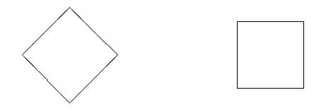
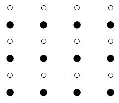

The Contents of Perception
In contemporary philosophy, the phrase ‘the contents of perception’ means, roughly, what is conveyed to the subject by her perceptual experience. For example, suppose you are looking into a piano at the array of hammers and strings. There will be a way these things look to you when you see them: they will look to have a certain shape, color, texture, and arrangement relative to one another, among other things. Your visual experience conveys to you that the piano has these features. If your experience is illusory in some respect then the piano won’t really have all those features. But even then, there will still be something conveyed to you by your experience. Three main questions will be addressed in this entry. First (Sections 1–2), what are contents and what is their relation to experiences? Second (Sections 3–7), which contents are contents of experience? Finally (Section 8), in virtue of what do experiences have contents, when they do?
- 1. What are Perceptual Experiences?
- 2. Contents as Accuracy Conditions
- 3. Varieties of Content
- 4. The Representation of Properties
- 5. The Representation of Objects
- 6. Concepts and Content
- 7. Content and Phenomenology
- 8. Theories of Intentionality in Experience
- 9. Directions for Future Research
- Bibliography
- Academic Tools
- Other Internet Resources
- Related Entries
1. What are Perceptual Experiences?
This entry will focus exclusively on the contents of perceptual experiences. It is definitional of experience, as the term is used here, that they have some phenomenal character, or more briefly, some phenomenology. The phenomenology of an experience is what it is like for the subject to have it. At any given waking moment, one normally has experiences in some (perhaps all) of the five sense modalities, along with proprioceptive experience of some sort. Like occurrent emotions and background moods, these contribute to one’s overall experience. Each of five sense modalities seems to be accompanied by a distinctive kind of phenomenology. Sometimes the boundaries between them can be hard to draw, for example between olfactory and gustatory phenomenology, kinesthetic experience and haptic-tactile experience (that is, tactile experiences involving movement rather than just pressure sensation), and perhaps, in some cases, between the latter two and visual experience (on the last point see Press et al. 2004, Kennett et al. 2001, Fotopoulou et al. 2009; on distinguishing the senses, see Stokes, Matthen and Briggs 2014, Wilson and Macpherson 2018). Despite these difficulties, some rough distinctions can be drawn: the difference between seeing red and seeing blue is not a difference in how things sound, or in how one’s body feels.
In what follows, “experiences” will be restricted to experiences in any of the five modalities or kinesthetic experience or some combination. In the analytic tradition, most of the questions discussed in this entry have been addressed with regard to visual experience and pain. In contrast, the phenomenological tradition explored similar questions with respect to other modalities. For instance, Husserl’s exploration of auditory experience of hearing a melody is central to his discussion of the experience of time (see the entries on phenomenology, auditory perception, and the perception of time). In principle, however, the questions addressed here could be raised with respect to any kind of experience.
2. Contents as Accuracy Conditions
When one speaks of the contents of a bucket, one is talking about what is spatially inside the bucket. An analogous use of “the contents of perception” would pick out what is ‘in the mind’ when one has a perceptual experience. In contrast, when one speaks of the contents of a newspaper, one is talking about what information the newspaper stories convey. Many contemporary uses of “the contents of perception” take such contents to be analogous to the contents of a newspaper story, rather than the contents of a bucket. This notion of content can straightforwardly accommodate the idea that there is such a thing as the ‘testimony of the senses’.
One influential version of the idea that the contents of perception are analogous to the contents of a newspaper story holds that the contents of an experience are given by the conditions under which it is accurate. What an experience conveys to the subject, according to this conception, is that those conditions are satisfied.
On the conception of contents as given by accuracy conditions, there is a broad analogy between the contents of experience and the contents of thoughts and utterances, in that both contents are assessable for accuracy. Suppose I utter the sentence “Dogs are lively, loyal creatures” and thereby express my belief that dogs are lively, loyal creatures. The content of my utterance is what I assert, and the content of my belief is what I believe—in both cases, that dogs are lively, loyal creatures. Usually these contents are thought of as some kind of proposition—an abstract object that is the kind of thing that can be true or false (see the entry on structured propositions). Notice that both the utterance and the belief are assessable for truth: their content is true just in case dogs really are lively, loyal creatures.
In the case of beliefs and utterances, it is not just their contents that are assessable for accuracy (where accuracy is truth); the beliefs and utterances themselves are as well. A belief or utterance inherits its truth-value from the truth-value of its content. This stands in contrast to desires or hopes, which may have contents that are assessable for accuracy, but are not themselves so assessable. If experiences have accuracy conditions, then they are like beliefs and utterances in this respect, and unlike desires and hopes.
The conception of the contents of experience as given by its accuracy condition can be motivated by the idea that one can be misled by one’s experiences. Suppose you see a fish while unwittingly looking in a mirror. It may look as if there is a red fish in front of you, when in fact the red fish you see is behind you and there is no fish at all in front of you. Similarly, in auditory or olfactory hallucinations, one may seem to hear voices when in fact no one is speaking, or to smell an odor when in fact nothing is emitting that smell. In phantom limb pain, one feels pain as located where one’s limb used to be but is no longer. These are cases of being misled by one’s senses, and it is natural to say that in these cases things are not as they appear to be.
Once one recognizes the datum that one can be misled by one’s senses, it is a further claim that experiences themselves can be assessed for accuracy. It is a further claim, because one might be misled by something that is not itself assessable for accuracy: e.g., one might be misled by the car in the driveway into thinking that your neighbor is home. So the fact that something plays the role of misleading you does not show that it is assessable for accuracy. But in the case of experiences, this further claim is motivated in the following way. Given an experience—either one we actually have, or a hypothetical one—we at least sometimes have intuitions about whether the experience is accurate (“veridical”) or inaccurate (“falsidical”). To this extent, we seem to be able to assess experiences for accuracy.
When we assess an experience as accurate or inaccurate, we consider how things are in the world. This suggests that experiences which can be assessed for accuracy are associated with accuracy conditions: conditions under which the experience is accurate. When we have intuitions about whether an experience is accurate, we at least sometimes also have intuitions about the conditions under which it would be accurate. (For discussion of such intuitions, see Siewert (1998), chapter 7, Schellenberg (2018). Going with this, we seem to have intuitions about when experiences are incorrect.
In large part, our intuitions about when experiences are accurate concern objects and properties. For instance, many have the intuition that the following experience is falsidical: you see a fish that appears blue to you, but is actually red. According to the intuition, the fish’s failing to be blue suffices for the experience to be falsidical. Intuitively, for the experience to be accurate, the fish in question must really be blue. It is an open question how specific and how extensive such intuitions are, hence to what extent such intuitions can reveal which accuracy conditions experiences have, assuming that they have accuracy conditions at all. But so long as there are some such intuitions, there is a prima facie case for experiences having accuracy conditions.
2.1 Do Experiences Have Accuracy Conditions?
Some philosophers deny that experiences have accuracy conditions. Such philosophers must offer a different account of what is happening in cases where one is misled by one’s senses, and they must dismiss or explain away putative intuitions about the accuracy or inaccuracy of experiences. A natural way to do so is to confine accuracy and inaccuracy to the level of belief, further downstream from experience.
There are a number of positions that deny that experiences have accuracy conditions (Wilson and Locatelli 2017). All these positions deny this claim on the grounds that it is not supported by either the metaphysics of experience or by its phenomenology. The positions differ, however, on their positive views of the metaphysics and phenomenology of experience.
The first position is the view that experiences are raw feels, or sensory affectations of the subject, that do not purport to represent the world in any way at all. The eighteenth-century philosopher Thomas Reid held a view of this sort: Reid argued that experiences have a sensory part that is a mere raw feel, and that is independent of judgments about how things are in the environment. (He took the latter essentially to involve concepts). One might, on this view, speak more broadly about experiences as having two parts, sensory part and a judgment part; or one might speak more narrowly about experience as being limited to the sensory part that is typically accompanied by judgment. Which way one speaks is merely a matter of terminology. The core feature of the view is its cleavage between the sensory aspect of experiences, on the one hand, and assessability for accuracy, on the other. Given a judgement that occurs simultaneously with a sensation, one could in principle make that very same judgment without having any sensation, and one could in principle have those very sensations without making any judgments. That is the force of saying that these two aspects, sensation and judgment, are independent. If experiences are understood narrowly as being limited to the sensory part, then they are not assessable for accuracy; and if they are understood broadly as having both a sensory part and a judgmental part, then it is only the latter that is assessable for accuracy.
The second position is a version of adverbialism about visual experiences, according to which such experiences are nothing more than modifications of a subject that can be characterized by specialized adverbs specifying how one is visually ‘appeared-to’. E.g., normally, when one sees a red tomato, one is appeared to red-ly and round-ly. Visual experience, on this view, does not by itself even purport to present one with objects or their properties. There are thus no accuracy conditions associated with such experiences. Instead, on this view, to be misled by one’s sense is to end up with a false belief that is caused by one’s experience. (For further discussion of adverbialism, see the problem of perception; also Chisholm 1957, Ducasse 1942, Tye 1984, Sellars 1975, and for critical discussion, Jackson 1977). Strictly speaking, it should be noted that so long as the core thesis of adverbialism is that experiences are modifications or properties of the subject, adverbialism leaves open whether experiences are assessable for accuracy or not. For all that core thesis says, being appeared-to F-ly could be a way of representing that something is F. Historically, adverbialists’ main motivation was to oppose the act-object conception of experience, according to which experiences are structured by an act of awareness, on the one hand, and an object of awareness, on the other. Early formulations of the view presented it as a view according which experiences were not assessable for accuracy.
The third position is that at least some perceptual experiences come in degrees that correspond to degrees of uncertainty. Compare: there is straight answer to the question “Is the sound I hear a coyote?”, when you are uncertain whether the sound comes from a coyote or a human baby. You cannot simply answer Yes or No to express your opinion; you have to hedge. If you are in such a state of uncertainty, it might seem, then there no way the world could be in order for your state to be accurate or inaccurate. By analogy, on the third position, experiences sometimes reflect uncertainty in a way that leaves them with no accuracy conditions (Madary 2012, Morrison 2015, Munton 2016, Vance 2020, Raleigh and Vindrola 2020). There is a fourth position that denies that experiences have accuracy conditions. This position starts with the claim that some experiences consist in a chunk of the environment—for instance, a lavender bush—being perceptually presented to a subject, so that both the lavender bush and the perceptual relation between it and the subject are constituents of the experience. (Note that this is more specific than the view that says merely that perception of public objects is ‘direct’. That view is silent on what the nature of perceptual experience is). According to one version of this view, when you see a lavender bush, some of its properties are presented to you, and your experience consists in your being so related to the bush and those of its properties that are presenting themselves to you. You could have an experience that was indistinguishable from one of so seeing that very lavender bush: as it might be, an experience of seeing a different lavender bush, or a hallucination that was indistinguishable from the original experience. But neither of these experiences, according to this view, would be the same sort of experience as the experience of seeing the original lavender bush. Martin (2006) and Smith (2002) call this view “naïve realism”. Another version of this approach, developed by Johnston (2006) and (2014), develops the idea that perceivers are presented with instances of properties rather than with universals. Note that both Martin and Smith’s versions are simply silent on the nature of hallucinatory experiences. (For more on naïve realism see the entry on the disjunctive theory of perception).
As stated so far, naïve realism is neutral on whether any experiences have accuracy conditions. A version of the view, however, explicitly denies this. This version holds that experiences are analogous to chunks of the environment that clearly lack accuracy conditions. The lawn chair on the deck is not the kind of thing that can be accurate or inaccurate (though it may figure in the accuracy conditions of an utterance, such as an utterance of “that is a lawn chair”). Travis (2004, 2013) develops naïve realism in just this way. He also offers further reasons for denying that experiences have accuracy conditions. Travis agrees that in having an experience one may represent that such-and-such is the case. He holds, however, that there is no unique ‘taking’ associated with an experience, and experience is only ever an input to representation, never the result of it. One of Travis’s examples is this: if you see Sid and Pia touch hands at the dinner table, you make take them to be trysting. But considered independently of this ‘taking’, your experience simply consists in being presented with an unrepeatable, particular chunk of the environment, namely Sid and Pia at the table touching hands. (The notion of being ‘presented with’ is left as primitive). Accuracy conditions come into the picture only after you take the environment as it is presented to you to be some specific, potentially repeatable way. So according to Travis, the experience does not map onto any unique set of accuracy conditions. Since illusions involve inaccuracy, by Travis’s lights illusory experiences are experiences that have been ‘taken’ in such a way that the ‘taking’ is false.
A fifth position that denies that experiences have accuracy conditions says that experiences are raw feels, but also holds that all experiences have the same structure as perception of objects. On this view, experience consists in immediately perceiving private objects known as sense-data. According to sense-datum theories, when your experience is a case of perceiving a public object, such as a white wall that looks red, you indirectly perceive the wall by immediately perceiving a red sense-datum. In general, sense-data really have the properties that public objects look to have. In this way your having (i.e., immediately perceiving) the sense-data you do is supposed to account for what it is for a public object to appear to you to be a certain way; and you have sense-data whether or not there is any public object that you indirectly perceive by immediately perceiving them.
It should be noted that if the core commitment of sense-datum theories is that one immediately perceives mental objects in experience, then sense-datum theories are neutral on whether experiences are assessable for accuracy. From the fact that one perceives (or immediately perceives) a particular object (be it a public object or a private mental one), nothing at all follows about whether the experience of so perceiving is assessable for accuracy or not (for more on sense-datum theories, see the entries on sense data and the problem of perception). Jackson (1977) defends a version of the sense-datum view according to which experiences are not assessable for accuracy.
All of these positions except the third one could be seen as offering construals of the contents of the perceiver’s mind, where these are analogous to the contents of a bucket. Such construals contrast with the newspaper model of perceptual contents, and more specifically with the conception of contents as the accuracy conditions of experience. Henceforth ‘the contents of experience’ will be restricted to a notion that says that the contents of an experience are the conditions of accuracy associated with it. The claim that experiences have contents in this sense is substantive, and, as we have seen, is denied by some philosophers. But many philosophers accept that experiences have contents in this sense, and this conception of the contents of experience dominates the recent philosophical literature on perception. Defenses of the thesis that experiences have contents can be found in Byrne 2009, Pautz 2010, Schellenberg 2018, and Siegel 2010a and 2010b, and criticisms of those defenses in Breckenridge 2007 and Wilson and Locatelli (2017).
2.2 Beliefs and Experiences
There are many ways of developing the idea that experiences are assessable for accuracy. One idea is that the contents of experience derive in some fashion from the contents of beliefs, so that experiences bear some constitutive link to beliefs. Three sorts of constitutive links to belief have been discussed in the literature. The first is that experiences are acquisitions of beliefs; the second is that they are dispositions to form beliefs; the third is that they are grounds of dispositions to form beliefs. A fourth position simply identifies experiences with beliefs about how things look (Gluer 2009), or even more simply, with beliefs whose content characterizes the way things look (Bryne 2016).
First, suppose experiences are acquisition of beliefs formed by a standard use of a perceptual apparatus. When applied to visual experiences, this view says that for as long as you see something that looks like a red, shiny fish in front of you, you are acquiring a belief that there is a red, shiny fish in front of you. The content of experience, on this view, will be the same as the content of the beliefs with whose acquisition the experience is identical. And what makes a content the content of an experience, as opposed to some other kind of mental state, will be whatever makes it the content of those beliefs. (This view is critically discussed by Pitcher in his 1971, chapter 2.)
A standard objection to so identifying experiences with the acquisition of beliefs is that one may not believe that things are the way they appear. (This objection is discussed by Pitcher, op cit, and by Armstrong 1968). For instance, if you have background knowledge that despite appearances there is no red shiny fish in front of you, then you will not believe that there is one. To accommodate this objection, the relation between experiences and the acquisition of beliefs must be something other than identity.
Second, suppose that experiences are dispositions on the part of the subject of the experience to form beliefs. This view is defended by D. Armstrong (1968), G. Pitcher (1971), D. Dennett (1991). Which disposition an experience is, on this view, depends on how things appear to the subject in the experience. For instance, if you seem to see a red shiny fish in front of you, then (on this view) you have a disposition to believe that there is a fish in front of you, and your experience is identical with this disposition.
If experiences are dispositions on the part of the subject to form beliefs about how things appear to her, a natural accompanying view about the contents of experience is that these just are the contents of the beliefs one is disposed to form. According to this view, what makes some contents contents of experience, as opposed to being contents of some other kind of mental state, is in part that one is disposed to believe those contents.
One could then develop the idea that experiences are assessable for accuracy in the following way:
- Having an experience consists in being disposed to form certain beliefs.
- The conditions under which the experience is accurate (i.e., its contents) are the same as the conditions under which the beliefs one is constitutively disposed to form in having the experience are accurate. (Equivalently, the contents of experience are the contents of the beliefs one is constitutively disposed to form in having it).
Pitcher’s view in his 1971 is (a). Claim (b) is a natural extension of (a), given the assumption that beliefs have accuracy conditions. (Pitcher doesn’t talk explicitly about accuracy conditions).
One difficulty with (a), and so with (a) and (b), is that it leaves open how the relevant dispositions must be grounded. You could be disposed to believe that there was music playing next door because someone told you it was, and yet, it seems, not hear or even seem to hear any music: you might be totally deaf, for instance. In this case you would not have any auditory experience of music, despite being disposed to believe that music is playing. So proponents of (a) seem well-advised to specify an appropriate ground for the dispositions they identify with experiences, so that they do not misclassify as experiences events that intuitively are not experiences.
This brings us to the third position on the relation between experience and belief: that experiences are perceptual grounds of dispositions to form beliefs. Just what a specifically perceptual ground is has to be spelled out—a natural suggestion is that it requires a certain etiology involving sensory organs, or functional equivalents. Given this third position, a natural accompanying conception of the contents of an experience is that they are the same as the contents of beliefs that one is disposed to form in having the experience (claim (b) above). However, another version of the view might hold that although the experience itself is constitutively linked to beliefs, it does not have contents that are constitutively linked to the contents of the beliefs.
Claim (b) above, which identifies the contents of an experience with contents of beliefs one is disposed to form in having the experience, assumes that the contents of both kinds of state can be the same. Some philosophers have argued that the contents of such states must differ. If this is correct then none of the views here mentioned can be correct as stated. (For discussion of how the views might be modified, see Section 6.2 below, and the entry on non-conceptual content.)
Another objection to views that posit constitutive links between experiences and beliefs, or between experiential contents and belief contents focuses on primitive creatures that can have experiences, even though they lack the capacity and disposition to form beliefs. Such creatures would seem to be impossible if experiences were constitutively linked to beliefs, as the views discussed here hold. This objection seems to apply to the position that identifies experiences with beliefs about the ways things look (defended by Glüer 2009). In contrast, Glüer’s (2009) view seems immune from the objection that assimilating perceptual experience to belief would entail that subjects of known illusions have contradictory beliefs, and so are irrational. This objection applies to Byrne (2016), who argues that this consequence is plausible.
2.3 Content and Attitude
Instead of holding that the perceptual content derives from the content of belief, one might instead hold that the contents of perception and the contents of belief are in some sense analogous, and more generally that experiences and beliefs are similarly structured by contents on the one hand, and a relation to those contents, on the other.
Beliefs are often thought to be relations to contents, and contents of beliefs are often thought to be contents that one can stand in other relations toward, besides belief. Such relations are sometimes called ‘attitudes’, where examples of these are supposed to be notions from folk-psychology such as hoping, wanting, or supposing. However, it is useful to construe the notion of ‘attitude’ more broadly, so that it is more generally a way of having content. Subpersonal states of visual processing, if they are informational states with accuracy conditions (and so with contents in our sense), will instantiate ways of having content; so would the propositional attitudes as they are traditionally conceived. From now on ‘attitudes’ will be relations in which one can stand to contents, when one has a contentful mental state. Both philosophers and psychologists have found it useful to mark such a distinction.[1] More recently, Crane (2003) calls attitudes in this broader sense ‘intentional modes’. (See also Searle 1983, Chapter 1.) These are all distinctions between aspects of mental states, where one feature (akin to content) characterizes the subject-matter of the mental state, and the other (akin to attitude) characterizes a mode of entertaining it.
If experiences have contents, then they will be structured by attitude and content: the experiences will have content in an experiential way. Several substantive questions arise about what experiential attitudes are.
First, it is an open question how finely grained the experiential attitudes may be. A natural proposal is that there are different experiential ways of having content corresponding to the different sense modalities. But it is far from given that the modalities mark out natural kinds of sensory experience, let alone the only natural kinds of such experience, since it is a complicated question how to distinguish the different kinds of sensory experience from one another. Furthermore, there are multi-sensory phenomena, such as synesthesia, which defy straightforward categorization as a single kind of sensory experience. Another problem case may be the experience of bodily actions, in which (say) visual, kinesthetic and tactile experiences are intertwined. (See Press et al. 2004, Kennett et al. 2001 and Fotopoulou et al. 2009 for discussion of cases in which visual experience enhances tactile acuity and kinesthetic experience generally).
Second, it is a substantive question what constitutes an experiential way of having content. Tye (1995, 2000) has proposed that what makes a state have a content in the experiential way is that it has a certain functional role: it is ‘poised’ for a certain kind of use in the cognitive system; and in addition it has non-conceptual content (see Section 6.2) and is not individuated by any objects that it may represent. Another option is that what makes a state have content in an experiential way is that it has the appropriate sort of phenomenology (see Chalmers 2004). A third option is that the experiential way of entertaining content overlaps with the belief way of entertaining it—whatever exactly that is. This last option seems to underlie a very influential idea developed in Armstrong and Pitcher’s proposals, that experiences are belief-like in an important way. (Cf. Pendelbury’s discussion of sensuous belief in his 1986; Heck’s discussion of ‘assertoric force’ in his 2000; Martin’s discussion of ‘coerciveness’ in his 2002). These options are not exclusive.
Third, it is a substantive question to what extent attitude and content are independent from one another. Once we fix on an experiential way of entertaining content, what if anything limits the range of contents that can be entertained in that way? Going in the other direction, once we fix on a content, are there limits on what attitudes may be taken toward it? How this question is answered bears on several neighboring issues. If any content that can be entertained experientially can also be entertained unconsciously, then it will not be contents alone that give an experience its phenomenality. The question also bears on the question of whether there is non-conceptual content (see Section 6.2 and the entry on non-conceptual content).
Fourth, it is sometimes assumed that if experiences are structured by attitude and content, then experience types will be individuated by their specific attitude plus their contents, so that if an experience E1 with content C is type-identical to an experience E2, then E2 will also have content C, and E1 and E2 will instantiate the same experiential attitude. The source of this idea may be an analogous claim about beliefs: namely, the claim that if belief B1 with content C is the same belief-type as B2, then B2 will also have content C. However, it should not be taken as a consequence of the claim that experiences have content that their contents individuate experience-types. Rather, this is a substantive claim that needs both refinement and defense. Even if beliefs were individuated by their contents, that would not suffice to show that experiences are as well. Some additional reason would be needed to think that experiences and beliefs are alike in this respect.
If one holds that experiences are not constitutively linked to beliefs but are similarly structured by attitude and content, then this is one motivation for thinking there are experiential attitudes distinct from belief. However, one could hold that experiences are so structured (by attitude and content), while also holding that experiences have their contents in virtue of their connections to beliefs.
3. Varieties of Content
So far, we’ve reviewed two broad ways of developing the idea that experiences have accuracy conditions: on the first way, these derive from the contents of beliefs; on the second way, they don’t. On either of these two approaches, the question arises of what kinds of content experiential contents are.
Whichever of the two approaches are taken, a basic constraint on the contents of an experience is that these should reflect (at least some) intuitions about when experiences are accurate or inaccurate. Another commonly-held constraint is that the contents must be adequate to its phenomenology: any proposal for what contents a given experience has must in some way reflect the phenomenology of the experience. The notion of phenomenal adequacy has considerable intuitive force. Theories of the contents of experience are often defended on the grounds that they “do justice to the phenomenology” (for example, see the discussion in Section 6.2 of the ‘richness’ motivation for non-conceptual content, the discussion in Section 3.4 of indexical content, and Chalmers (2006)) or are criticized on the grounds that they “get the phenomenology wrong” (e.g., Smith 2003, 259ff; Dainton 2000, 115; Johnston 2004, 120). These appeals presuppose that the contents of experience have to in some way reflect the phenomenology of the experience.
This section reviews the main theories of what kinds of contents experience contents are.
3.1 Russellian Contents
Some philosophers of language defend the view that an utterance of the form ‘N is F’, where ‘N’ is an ordinary proper name, expresses a structured propositional content consisting of the referent of the name ‘N’ and the property expressed by the predicate ‘F’. For instance, if the sentence uttered is ‘Frida is cold’, then the associated content would consist in Frida herself and the property of being cold. Contents consisting of referents of singular terms and properties expressed by predicates are known as Russellian, because at one time Russell advocated the view that singular terms contribute only their referents to the proposition expressed by sentences in which they occur (or utterances of such sentences). Our example uses the ordinary proper name ‘Frida’; but Russell himself thought that such names were not genuine singular terms, and denied that public objects ever got into Russellian contents. In contemporary discussions, such contents are also called singular contents, because they include the referent of a singular term itself rather than a description that picks out different objects depending on which thing in the world satisfies it.
One of the simplest theories of the contents of experiences says that experiences have contents that are Russellian, and that these contents consist of the very things that appear to have certain properties and the very properties that they appear to have. For instance, if one has a visual experience representing a red cube, the contents of experience on this view would be the structured proposition containing the object one sees that looks like a red cube and the property of being a red cube. This content would have the form [o,P], where o is the very object one is perceiving in having the experience, and P is the property that o appears to have. Note that this is a view both about the nature of the contents themselves, and about the conditions under which such experiences have them: an experience has such contents when the subject is seeing an individual that appears to have the property that occurs in the content.
The strongest Russellian contents include both objects and properties. In practice, the Russellian content of a complex visual experience might involve a number of different objects having a conjunction of different properties: location properties, shape properties, color properties, and so on.
Instead of strongly Russellian contents just described, one could define weaker Russellian contents that involve the very properties things appear to have, but don’t involve the very objects that appear to have them. These weaker Russellian contents are said to be existentially quantified contents, which would be naturally expressed by saying something of the form ‘There is a red cube at location L’. Most philosophers who defend the view that experiences have Russellian contents hold that these contents are weaker Russellian contents. (For general discussion, see Chalmers 2004; for discussion of the case of color, see Thau 2002, Shoemaker 1990, 1994, 2005, Holman 2002, Maund 1995, Wright 2003.) One reason for weakening contents is this way is to respect the ideas that two experiences can represent the world as being the same way, even if they are experiences of perceiving numerically different objects, such as twins. Another reason sometimes given for positing weak as opposed to strong Russellian contents is that two experiences can represent the world as being the same way, even if one is a hallucination in which no object is perceived at all. (see e.g., Tye 1995, chapter 5, and Tye 2000, chapter 3). Here, though, it is important to distinguish the view that contents are individuated by the objects they comprise, from the view that an experience has a Russellian content that includes the object o only if the subject is perceiving the o. This latter view is an optional extra (built in to the simple Russellian view discussed above), not entailed by the claim that experience has Russellian content. (Logical space has room for the view that hallucinations can sometimes have strong Russellian contents, as when one hallucinates one’s father, or some other particular person. For discussion of this issue see McLaughlin 1989, Smith 2002, ch. 7 and Johnston 2004).
Some philosophers have argued that experiences can’t have color-involving Russellian contents and can’t have location-involving contents on the grounds that this would allow phenomenally different experiences of colors and locations to have the same Russellian contents. These criticisms illustrate the appeal to the phenomenal adequacy constraint on contents. More exactly, they appeal to a way of specifying that constraint by holding that when two experiences are phenomenally the same, or are phenomenally the same in a respect, there should be some contents that they have in common. These criticisms are discussed in Section 4.1 (color) and Section 4.2 (location).
3.2 Possible-Worlds Content
Another simple theory says that the contents of experiences are sets of possible worlds in which things are as they appear to be in the experience. For instance, if one has a visual experience representing a red cube, the contents of experience on this view would be a set of possible worlds in which there really is a red cube in front of you. Or perhaps they might be a set of possible worlds in which the very cube C that is actually in front of you is red. The central idea behind this view is that to represent a situation—whether in language, in thought, or in experience—is to distinguish between two ways the world might be: first, ways the world might be if the situation does obtain, where these include the actual world; second, ways the world might be if the situation does not obtain. For instance, if a subject’s experience represents that there is a red cube in front of her, she thereby (on this general view of representation) represents the actual world as being among the worlds in which there is a red cube in front of her. Stalnaker (1984) and Lewis (1986) think this view best reflects the nature of representation.
One potential problem with possible-worlds contents concerns experiences that represent impossible scenes. Consider the staircase depicted in the Escher drawing, on which one seems to be able to make four consecutive left turns, ending where one begins, yet walking downstairs (or upstairs) the whole time. Another example of contradictory contents comes from the waterfall illusion, when one looks at a stationary object after looking at a waterfall, the object appears to move, yet appears to stay still relative to its background. Similar illusions of movement can be achieved by looking at spirals on paper. These experiences differ phenomenally from one another. Moreover, although all seem to represent both that something is moving and that the very same thing is not moving, they represent much more specific scenes as well, and these specifics clearly differ. It seems that possible-worlds contents could not reflect these differences. Since the set of possible of worlds in which things are as the experience represents them to be is the null set, the view that says that the only contents of experience are possible worlds would posit the same content (i.e., the null set) for all of them.
3.3 Fregean Contents
A third theory says that the contents of experience are composed of modes of presentation of objects and properties, rather than objects and properties themselves. The key feature of modes of presentation, on this view, is that a single object or property can have multiple modes of presentation. A Fregean content will be true only if the object presented by a mode of presentation in the content has the property (or properties) presented by a mode of presentation in the content. (See Chalmers 2004).
The Fregean theory is motivated in part by the same considerations that motivate analogous views in the philosophy of language. The key sort of example in the philosophy of language involves a pair of sentences, such as “Hesperus is the morning star” and “Hesperus is the evening star”, that are the same except for containing different terms that refer to or denote the same thing (both “the morning star” and “the evening star” denote Venus). Suppose a subject rationally accepts one of these sentences while rationally rejecting or remaining neutral on the other. Then, it is argued, though the sentences cannot differ in their truth-value, they must play different roles in the subject’s reasoning: for example, the subject will list Hesperus among the heavenly bodies visible in the evening, but she won’t list Hesperus among the heavenly bodies visible in the morning. Fregean theorists take there to be an aspect of meaning that is linked to cognitive role in this way.
Fregean contents of experience are supposed to play the same role, and thus are motivated by cases with the same structure. Recall our example of two people with experiences that represent the same red cube at the same location L, but from different perspectives (Schellenberg 2018). The Fregean addresses this sort of case by holding that the experiences contain different modes of presentation of the cube. An example of such a view is defended in Burge (1991).
Another example that motivates the view that experiences have Fregean contents involves perceptual constancies. In the case of color constancy, a table can look such a way that one would readily judge that it is uniformly brown, even though one can discern variations in lightness and darkness. Sometimes the variations are brought into focus by considering how many different shades of paint one would have to use to paint a realistic picture of the table. The central problem these cases pose for the theory of experiential content is to say exactly what ‘lightness and darkness’ are lightness and darkness of: since there is a good sense in which the table looks brown, it is not variation in the table’s color; but the variations seems nonetheless to be closely related to color. Size constancy illustrates the same problem: a departing train does not appear to shrink as it moves away from you; but there is something like size (even if it is not the size of the train) that does appear to lessen, and the problem for the theory of content is say what this is. Accounting for the constancies is a problem for the theory of experience content, because both the constant features and the varying ones are reflected in phenomenology, so by the phenomenal adequacy constraint, the contents should reflect them. The problem presented by the constancies is to show how it is that the constant and varying features don’t conflict in such a way as to make the experience falsidical (for having contradictory contents).
One attempt to account for the variation in these cases is to invoke Fregean modes of presentation of the constant features. In the case of color, such a Fregean proposal would say that experience represents the brownness of the table under modes of presentation that vary with the variations in lightness and darkness. The appeal of this strategy is that it does not treat the constant property and varying ones on a par: the constant feature is represented at the level of reference; the varying features at the level of sense. The table does not look to be both brown and shiny white or grey; it looks to be brown, by looking shinier or brighter in some parts than it does in others.
It should be noted that the other historically influential attempts to account for the constancies was the sense-datum theory, which (in the case of the table) would posit a sense-datum that really is shiny and white, in addition to the brown table itself. The Fregean attempt claims to acknowledge both constant and varying features, without positing such additional entities.
The main challenges for Fregean views (of utterance content, belief content, and experience content) is to make precise in each case what modes of presentation are such that they can reflect these variations. (For criticisms of Fregean views about the contents of both beliefs and experiences, see Thau 2002, ch. 2. For defense of the Fregean view drawing on epistemological considerations, see Silins 2011).
3.4 Indexical Contents
Many contentful experiences seem to have contents that must be specified by the use of indexical expressions, such as ‘over there’, ‘to the left’, ‘here’, ‘in front of/behind me’, ‘just a second ago’, ‘since a few second ago’, and so on. For instance, some auditory experiences seem to present sounds as coming from a direction relative to the ears; some proprioceptive experiences seem to present pressure sensations as located in specific parts of the body; visual experiences seem to present things in locations relative to the eyes and the rest of the body. More generally, contentful experiences present the world from the subject’s perspective both in space and in time. If one tried to characterize the perspective aspect of contents in language, it would be natural to use indexical expressions for spatial properties, for the subject herself, and for times.
To begin with spatial content, suppose you hear a sound as coming from your left. Someone else facing you, due to different orientation, hears the same sound as coming from the right. Moreover, a third perceiver situated halfway around the world could hear a qualitatively identical sound as coming from her left. The area to the first perceiver’s left is the very same spot as the area to the second perceiver’s right, whereas the area to the left of the third perceiver, who is very far away from the other two, is a completely different part of space. Now, if contents are to reflect which side of the perceiver the sound seems to come from, then it is not enough simply to include the very area from which sounds are coming in the content. That would not reflect what’s in common between you and the third perceiver, who is halfway around the world. It would also fail to reflect what’s different between you and the second perceiver, who is differently oriented than you. So it seems that some more specific representation of location and direction is needed.
If locations and directions are represented in experience, then it seems they are represented relative to the subject, in which case there has to be some way of representing the subject herself (or itself)—or at least the perceptual organs or body parts that are on the subject-side of the spatial relations. This suggests that bodily awareness of some sort may be involved in contentful experiences, even when those experiences are otherwise visual or auditory, so that experiential attitudes may have to be cross-modal, rather than being individuated simply by sensory modality. Another question is how self-representation works in experience. Some forms of self-awareness are cognitively demanding; yet representation of perceiver-relative locations and directions are clearly involved in experiential contents. There is a theoretical need, then, for an account of self-representations that could be had by cognitively primitive creatures, such as animals and human infants (for discussion, see Peacocke 1994).
Peacocke has argued (1992 chapter 3) that to adequately reflect the spatial and first-personal perspectives in experience, a special kind of content is needed. He calls his sort of content scenario content. Scenario contents are ways of filling out the space around the perceiver, consistent with the experience being correct. They include a point of origin and orientation on axes, in relation to which things are located. In our example, the sound comes from the left, relative to the origin in the subject’s body, which Peacocke proposes is the middle of the chest.
Indexical contents (spatial, first-personal and temporal) require modification or further specification of all three views about the contents of experience mentioned so far. In the case of possible-world contents, one way to have such an axis is to appeal to centered possible worlds: worlds centered on a subject, and possibly also a time and/or a location. The further features of the worlds can then be specified in relation to the point of origin: in the example, coming from the left of the center (or being such-and-such distance and direction from it). (See discussion of Peacocke’s ‘positioned scenarios’ in his 1992 ch. 3 and below.)
Somewhat similarly, Russellian contents may be modified in order to reflect first-personal indexical contents by introducing contents that are akin to open sentences, with a gap in place of a component corresponding to the subject. In the example involving the red cube, the contents might be something like a structured proposition containing the cube, the non-locational properties it appears to have (e.g., being red, being cubical, and so on), and then a component expressed by ‘two feet in front of ____’, where the gap can be filled in with different subjects in different circumstances. To assess this special semantic entity for accuracy, the gap would need to have a value. Whether its gap is filled or not, this entity is something that in principle two experiences had by different subjects could share. For discussion of these contents for experience, see Bach 1997 (in the Other Internet Resources section below); for a Fregean version of gappy contents see Burge 1991 and Schellenberg 2010; for a Russellian version of gappy contents for belief and utterances, see Braun 1993.
How to treat indexicality is one of the main challenges to Fregean contents of utterances as Frege himself understood these. (See Perry 1977, Evans 1990, Burge 1991.) One of the roles of modes of presentation according to Frege was to determine reference, so that any two expressions (or occurrences thereof) with the same sense would have the same reference. Another role is to reflect cognitive significance of sentences such as “Now it is 5pm, October 1st 2005”. The occurrence of “now” and of “5pm October 1st 2005” seem to refer to the same time, yet an utterance of the sentence could be informative to someone who did not know the date and time. One and the same time seems in some intuitive sense to have different ‘modes of presentation’: one expressed by ‘now’, the other expressed by ‘5pm October 1st 2005’.
In the case of indexical expressions, it is hard to see what feature of the meaning of ‘now’, if any, plays both of these two roles. This poses a problem for the Fregean doctrine of senses. Later theorists have rejected the feature of sense or modes of presentation whereby they determine reference, while retaining the idea a single object or property can have multiple modes of presentation. (See Chalmers 2002). In rejecting the idea that modes of presentation determine referents by themselves, they say that reference is determined by mode of presentation plus select facts about the environment in which the utterance or experience are had.
Proponents of these new Fregean modes of presentation invoke them to account for indexical features of experience contents. In the example of sounds coming from one’s left, the new Fregeans about experience contents invoke a mode of presentation that is shared by the experiences of the two perceivers in different places who hear the sound coming from their left, and a different mode of presentation for the experience of the perceiver who hears the sound as coming from the right. The former mode of presentation (roughly the same, they would say, as the mode of presentation associated with the expression ‘to the left’) refers to different places for each perceiver. The latter mode of presentation (roughly the same, they would say, as the mode of presentation had by the expression ‘to the right’), when it’s in the contents of the experience of the perceiver who hears the sound coming from the right, refers to the same place as the mode of presentation ‘to the left’ when it is in the contents of the experience of the original perceiver.
Modifications would also be needed for Russellian, possible-worlds, or Fregean contents of beliefs; and proponents of each of these views have discussed what those might be in the case of belief. (For discussion of indexicals and Russellian contents, see Kaplan 1977, Schiffer 1981, Austin 1990, and the entry on indexicals; for discussion of indexicals and possible-worlds content, see Stalnaker 1981; for discussion of indexical beliefs and Fregean contents, see Perry 1977; Evans 1981, McDowell 1984.) It is an open question whether modifications that succeed for the case of belief can also succeed for the case of experience. An influential approach that has been developed for both beliefs and experiences appeals to a special kind of possible world: centered worlds, where these are possible worlds marked with a designated subject and perhaps a designated time or other parameters. The centered-world framework can provide a level of content that can be shared by two perceivers who perceive qualitatively identical but numerically distinct cubes in different locations as being nearby: each experience is true in worlds where there is a cube nearby the designated center of that world. Features such as being nearby the center are called “centering features” (see Egan 2006a, 2006b, 2010), and can be used to describe both the phenomena that indexicals are apt for describing, as well as perceptual constancies and secondary qualities. For discussion see Brogaard 2010 and 2018, Chalmers 2006, Egan 2006a, 2006b, 2010, GReenberg 2018. Centered worlds are implicit in Peacocke’s 1992 discussion of scenario content.
3.5 Multiple Contents
If experiences have at most only one kind of content, then there will be a substantive debate about whether experience contents are Russellian, unstructured, Fregean, or versions of these modified to take account of indexicality. Three sorts of considerations are typically invoked to decide between these: (i) which best reflect intuitions about veridicality of experiences; (ii) which best reflect distinctions to which experiences are sensitive; (iii) which contents best reflect the phenomenology of experience.
Some philosophers have proposed that there are different explanatory purposes for contents to serve, and one kind of content cannot serve all of them. (On the general strategy of dividing contents in this way see Fodor 1987 and White 1991.) Such philosophers think experiences have multiple contents. One example of such a position holds that experiences have contents that are both conceptual and non-conceptual (for more on this distinction, see Section 6.2 below. This kind of duality is explored by Reiland and Lyons 2015, and defended by by Lyons 2005a, 2005b and Bengson, Grube and Korman 2011). Another holds that experiences have both ‘gappy’ contents (somewhat akin to open sentences), but have object-involving contents as well when the experience stands in the right causal relations to environment (e.g., Burge 1991 and Schellenberg 2010; for discussion, see Martin 2003). Here the idea is that the gappy content reflects the phenomenology of the experience and the commonality in content between indistinguishable hallucinations and non-hallucinations, whereas the object-involving contents reflect intuitions about accuracy conditions for experiences that are adequately connected to the environment. A related idea is that contents of experience include both general and object-involving contents (Siegel 2010b).
Another example of a view positing multiple contents for multiple explanatory purposes is Shoemaker’s theory of color experience, according to which experience represents both color properties, partly in virtue of representing associated ‘appearance properties’ (see Section 4.1 for discussion). The representation of appearance properties is supposed to explain the phenomenal sameness of certain experiences with inverted qualia; whereas the representation of color properties is supposed to underlie intuitions about the veridicality of the experiences. (This is explained more fully in Section 4.1). A somewhat similar rationale is given for a form of ‘two-dimensionalism’ about experience contents, which holds that experiences have both indexical Fregean contents, and non-Fregean contents (either Russellian or unstructured) determined by the Fregean contents in conjunction with select facts about the environment in which the experience is had (Chalmers 2004, Thompson 2003). The indexical Fregean contents are supposed to reflect the inferential role and phenomenology of experience, while the non-Fregean contents are supposed to reflect the properties that we take experiences to attribute to objects. A related two-dimensionalist position (Chalmers 2006) adds a third kind of Russellian content to experience, ‘Edenic’ content, involving special non-instantiated ‘Edenic’ properties, which are supposed to reflect phenomenology perfectly—unlike indexical Fregean content, which is supposed to reflect it only imperfectly.
4. The Representation of Properties
If experiences have accuracy conditions, then it is natural to think of those conditions as conditions under which certain objects have certain properties. For instance, experiences seem to attribute properties to ordinary objects such as people, fish, bottles, shoes and the like: the bottle feels round to haptic touch; the shoes make clicking sounds as they hit the floor; a person’s face looks to be only 3 feet away and angry; the fish smells and tastes fishy. Taking ‘object’ in a broader sense, the attribution of properties to objects seems even more widespread: auditory experience can present sounds as loud; proprioception can present pains as throbbing; kinesthetic experience can present one’s toes as cold and wiggling; visual experience can present an entire expanse as bright pink; haptic-tactile experience can present a surface as smooth. Contents of experience, then, often seem to have a predicative structure, involving objects (in either narrow or broad senses) and properties. It then seems possible to theorize separately about the accuracy conditions that concern the properties things appear to have, on the one hand; and the accuracy conditions that concern the objects or things that appear to have the properties. The rest of section 4 will focus on accuracy conditions associated with properties; accuracy conditions associated with objects will be discussed in Section 5.
When the accuracy-conditions of an experience require that a certain property is instantiated, the experience represents that property. For instance, if the experience one has when seeing a grape is accurate only if the grape is green, then the experience represents the property of being green.
4.1 Which Color Properties are Represented?
The literature on how properties are represented in experience has focused largely on the case of visual experience and color properties. The question of how color is represented in experience is a good case with which to review debates about what sorts of contents experiences have. But one should generalize from the case of color experience with caution: views that seem strongest for the case of color properties may seem weaker for cases of other properties; views that seem strongest for the case of visual experience may seem weaker for other modalities, or for combinations of modalities.
The central issue here—which color-related properties are represented in experience—is closely tied up with the more general question of how the phenomenology of experience relates to its having contents. These more general issues are discussed in Section 7; but because the general discussion to date has focused so narrowly on color and visual experience, the considerations overlap greatly.
It is widely held that visual experiences represent color properties, attributing them to objects, surfaces, volumes and locations. However, there is substantial debate about what experiences represent when they represent colors. Let R-experiences be experiences with phenomenal character R, where R is the phenomenal character that normal perceivers have when they see red things. Let G-experiences be experiences with phenomenal character G, where G is the phenomenal character that normal perceivers have when they see green things.
According to a simple theory, G experiences represents greenness, and R experiences represent redness. An objection to this theory arises from a putative case of inverted qualia without illusion. The case goes like this. One perceiver, call her Nonvert, typically has R-experiences when she veridically perceives and is in causal contact with red things, and she typically has G-experiences when she veridically perceives and is in causal contact with green things. Another perceiver, call him Invert, typically has R-experiences when he veridically perceives and is in causal contact with green things, and has G-experiences when he veridically perceives and is in causal contact with red things. So, in the thought experiment, when Invert, with his G-experiences, sees a red tomato, his experience represents redness; when Nonvert sees the same tomato with his R-experiences, his experiences also represents redness.
On the assumption that experiences with the same color phenomenology will have the same color content, this thought experiment challenges the simple theory we began with, since it purports to describe a case in which a G-experience is an experience of veridically seeing red. Defenders of the simple theory may reject the assumption. Alternatively, they may challenge the part of the thought experiment that purports to describe inverted qualia without illusion. That is, they may challenge the idea that Invert’s G-experiences veridically represent redness, rather than non-veridically representing greenness. In response to this challenge, most interpretations of this thought experiment build in substantive assumptions about what sorts of conditions are sufficient for making it the case that experiences represent one color property rather than another. It is standardly said that the phenomenally different color experiences come to represent the same property due to externalism about color contents of experience, whereby when a type of experience stands in the right sort of causal relations to, say, redness, this suffices to make experiences of that type represent redness.
If the thought experiment describes a genuine possibility, there are at least three ways to modify the simple view: (i) Deny that content supervenes on phenomenology, allowing that two experience with the same color phenomenology can nonetheless differ in content. One version of this response says that the phenomenal difference is a ‘raw feel’ or ‘qualia’ (see Block 1990, 1996); another version holds that a single color property can present itself to a perceiver in phenomenally different ways. (ii) Hold that there are phenomenal differences between G-experiences that represent redness and G-experiences that represent greenness, so that ‘G-experience’ does not pick out a fully determinate phenomenal type An example of this response is externalism about phenomenology, defended by Lycan 2001 and Dretske 1995. (iii) Hold that there are contents shared by G-experiences that represent redness and G-experiences that represent greenness. This response is developed by Thau 2002, who offers a Russellian version of it; Chalmers 2004, who offers a Fregean version of it; and Shoemaker 1994, 2005, who offers another Russellian version of it.
Responses (i) and (ii) will be discussed in Section 7. Regarding response (iii), one Fregean theory about this thought experiment is that it is a case in which the experiences of Invert and Nonvert have different modes of presentation of the same color property (say, redness). On this view, redness would be presented in Invert’s experience under a G-mode, and it would be presented in Nonvert’s experience under a R-mode, so that the phenomenal difference between Invert and Nonvert’s experience would also be a difference in Fregean content.
A Russellian theory is that in addition to color properties, Invert and Nonvert’s experiences of the red tomato also represent a property closely associated with redness but distinct from it, and is represented by and only by R-experiences. Shoemaker calls these properties ‘appearance properties’. Call this the Shoemaker proposal. (Shoemaker 1994, Thau 2002, though Thau denies that colors are represented in experience, claiming that only the other properties are—so he does not accept the thought experiment exactly as stated. For another denial that colors are represented in experiences see Tolliver 1994).
A final theory about this thought experiment combines aspects of the Fregean and Russellian proposals. It says that Invert’s and Nonvert’s experience each has two contents associated with it. One set of contents involves objects and properties represented by the experiences; the other involves modes of presentation of these objects and properties. On this proposal, the object-property contents associated with Invert’s experiences are the same as Nonvert’s, but their modes of presentation are different.
The issue between the Fregean and Shoemaker proposals is subtle. Both agree (contrary to response (i), which includes the qualia view) that the difference between Invert and Nonvert’s experience of redness is a representational difference of some sort, as opposed to a raw feel. And both views posit entities associated with this difference: appearance properties for the Shoemaker proposal; modes of presentation for the Fregean proposal. The difference concerns the status of the entities associated with yet distinct from color properties: are they modes of presentation of the colors, or are they simply other properties, represented alongside the colors (or instead of them, as Thau holds). In Shoemaker’s 1994 version, color properties are represented in experience by representing appearance properties. The issue is sometimes described by saying that the Shoemaker proposal predicts that there are two color-associated ways that the tomato looks to be to each perceiver: it looks to be red; and it looks to have the appearance property. In contrast, the Fregean view predicts that there is just one color-associated way that the tomato looks to be: it simply looks to be red.
A related question is which properties color experience represents things as having when it represents them as being colored. Since color experiences in principle could be systematically in error, this is distinct from the ontological question of which properties the colors are, though the same options suggest themselves. According to one position, when an experience represents that an apple is red, it represents that it has a disposition to cause certain kinds of experiences. (See Langsam 2000 and McDowell 1985) According to an opposed position, when an experience represents that an apple is red, it represents that it has a non-dispositional property (McGinn 1983, Johnston 1992, Boghossian and Velleman 1992). One version of the latter says that experience represents a primitive property that cannot be specified in non-chromatic terms (Broackes 1992, Campbell 2003). Yet another says experience is neutral on whether redness is or isn’t primitive. (Byrne and Hilbert 2003) Another question is whether colors are represented as being properties of external objects, or of sense-data (where these are private mental objects), or both.
4.2 Which Spatial Properties are Represented?
Many contentful experiences represent properties as being instantiated at certain locations: one hears sounds as coming from certain directions; one experiences pains in specific parts of the body; one sees different colors in different places in the scene before the eyes. It is more controversial whether gustatory and olfactory experiences represent locations. We certainly end up attributing tastes and odors to things in the external world, but this alone does not show that the associated experiences represent any locations. (For discussion of olfactory experience see Lycan 2000, Smith 2002, ch 5, Batty 2010, Richardson 2013, Coveden-Taylor 2018; for discussion of gustatory experience see Smith ibid.) How are locations represented in experience, when they are?
One debate about the nature of representation of space concerns whether the positional properties represented in visual experience are relational or monadic. For discussion, see Casullo 1986.
A different debate concerns which contents are best to reflect important similarities in spatial experiences. Consider an experience whose contents include those that are expressed by an utterance of ‘There is a red cube at location L’. A simple view is that nothing more finely grained than location L itself is included in these contents. Peacocke (in his 1992, chapter 3) criticizes this view. Suppose that the experience in the example is veridical, so that there really is a red cube at L, And suppose L is to the left of the original perceiver, but that there is a second perceiver who is seeing the same red cube, except given her position relative to the cube it is on her right. The experiences differ: the perceivers see the cube as being in different positions relative to their bodies, and the experiences will affect actions of the perceivers differently, in that one would have to move to her right while the other will move to her left to get to the cube. Going with these differences, there seems to be a phenomenal difference between the experience of seeing a red cube to your left and seeing a red cube to your right. If the contents of experience are to reflect such differences, then there must be some more specific representation of location L than is allowed by simply including the area itself in the contents. The potential problem discussed here for location suggests that the contents of experience include indexical contents of some sort.
Peacocke has argued scenario contents are needed to adequately reflect how locations are represented in experience. A scenario is a spatial type, with a fixed origin in the human body and axes given by directions front/back, left/right, and up/down. Once the origin and axes are fixed, the scenario specifies the way the space is filled in at each point-type identified by its distance and direction from the origin. A positioned scenario is a scenario that has specific origin and axes at a specific time, and is thus assessable for accuracy. Positioned scenarios are supposed to reflect the way in which locations are represented in experience.
According to another proposal about spatial experiences, made by Cussins (1990), experiences of space consist in the subject’s having abilities to move in certain ways. On this view, to experience a sound as coming from the left is to know how to locate the place it is coming from, where this knowledge is practical knowledge about how to move through the environment. Having these abilities, according to Cussins, enables the subject to form beliefs and other mental states that are assessable for accuracy (or that have contents in our sense); but the abilities themselves, which are supposed to constitute experiences, are not; and even a creature who hadn’t yet or couldn’t form such states could still have the abilities. To have the abilities, according to Cussins, is to be presented with locations in experience. In his 1990 he calls this way of being presented with locations construction-theoretic content (where this kind of ‘content’ is not assessable for truth).
Peacocke has objected to Cussins’ construction-theoretic content that there appear to be cases where subjects lack the abilities to move to the locations presented in experience, for instance due to paralysis. Whether this objection has force depends on the notion of ‘abilities’; one might think the paralyzed have abilities that they can’t exercise.
Peacocke’s and Cussins’ theories differ in that scenario contents are assessable for accuracy and construction-theoretic contents aren’t, and both purport to be contents of the same experiences. However, something like construction-theoretic contents can be combined with scenario contents. One outstanding question for Peacocke’s theory is how an experience comes to have scenario contents, and a potential answer to this is that an experience comes to have the scenario contents it does by the subject’s having the abilities Cussins describes. More generally, the question of what makes it the case that one has the experience contents one does is an outstanding question for many theories of content (this issue is discussed further in the Section 8).
Another debate about the representation of spatial properties concerns the phenomenal difference between the experiences of seeing a four-sided equilateral figure as a square and seeing it as a regular diamond. (The example is from Mach 1914).

In one version of this contrast, there are two figures differing only in their orientation to the viewer (on a page, the top and bottom of the square is parallel with the top and bottom of the page; while the diamond is just like the square except rotated 45 degrees around its center.) Assuming that the property of being a square is the same as the property of being a regular diamond (an assumption defended by Peacocke in 1993, contested by Tye 2003, but granted by Tye 2004), this appears to be a case in which there is a phenomenal difference without any difference in the properties represented. The options, then, are similar to the ones listed in the discussion of the inverted color qualia: (i) deny that there is a difference in content corresponding to the phenomenal difference; (ii) hold that there are differences in the way the property of being square is represented, i.e., invoke different modes of presentation of this property (Peacocke 2001a, 2001b); (iii) find some other property that is represented in one experience but not the other, such as the viewer-relative property of resting on a side, or the property having two horizontal sides (properties allegedly attributed by experience to the square but not the diamond); and the property of standing on a point or the property of having inclined sides (properties allegedly attributed by the experience to the diamond but not to the square) (Tye 2005). Here we have another case of a debate between Fregean and Russellian positions on the nature of experience content.
Another topic concerning spatial representation in experience is the relation between representing locations of things, on the one hand, and representing things as mind-independent, on the other. According to some philosophers, for the case of visual experience, representing things as occupying three dimensions of space suffices for representing them as mind-independent (see Strawson 1958, Peacocke 1983, Masrour 2011; for dissent, see Smith ch 5, and 2000). According to others, visual experience represents spatial locations as locations from which one could act (Schellenberg 2007). [2]
4.3 Are High-Level Properties Represented?
Positions on which properties are represented in experience can be located on a rough continuum, with low-level properties (where these include color, shape, illumination, and depth) at one end, and high-level properties (where these include kind properties, agential or other emotional properties, and semantic properties) at the other. The issue is which of these properties can be perceived as being instantiated: e.g., whether one can have a visual experience that represents that someone is trying to do something. The debate about this is closely related to the earlier debate in the philosophy of science about whether one can distinguish between observational and theoretical properties (see Introduction to Suppe (1979)). In the philosophy of mind, defenders of the view that only low-level properties are represented in experience include Tye 1995, Dretske 1995, Clark 2000, Price 2009, Brogaard 2013, Bryne 2017; defenders of the view that high-level properties are represented in experience include Peacocke 1992, Siewert 1998, Bayne 2009, Masrour 2011, Nanay 2011, Block 2014, Siegel 2006 and 2017). It is worth noting that analogous debates can be pursued for views of experience that deny that experiences have accuracy conditions: for instance, if (with naive realism of the sort championed by Martin) one thinks that veridical experiences consist in being perceptually presented with an object and its properties, the debate will concern which properties of objects one can be perceptually presented with; if one is a pure sense-datum theorist, the debate will concern which properties sense-data can have.
According to one type of argument that high-level properties can be represented in experience, experiences can be theory-laden, in the sense that being disposed to recognize an object or property influences the phenomenology and content of the experience. The main premise of the argument is a claim about phenomenology: a place, such as your neighborhood, or a person, such as a close friend, may look different to you than it did when you first saw them (these examples are discussed by Siewert 1998); written text and spoken words in an initially unfamiliar language may look and sound different before and after you come to know their meaning (the auditory example is discussed by Peacocke and Siegel). These are cases in which background knowledge or abilities putatively influences what is represented in experience. If this can happen, then even if a distinction in the philosophy of science between ‘observation and ‘theory’ can be drawn, it will not align with the representation of low-level properties, on the one hand, and high-level properties on the other.
One type of case for denying that high-level properties are represented in visual experience appeals to two main ideas. First, that the only experiential representations are those that result in a lawlike way from retinal stimulation. Second, retinal stimulation, in turn, is said to give rise to experiences independently of other cognitive apparatus on the part of the subject, and is insulated from any information processed cognitively. A case of this sort is given by O’Shaughnessy (2000), chapter 17.
Some debates about which properties can be represented in perception focus on specific properties. It is important to distinguish between, first, perceiving causation, on the one hand, and, second, representing causal relations in experience, on the other. It is a substantive question whether the former can happen only if the latter does. The first issue concerns whether one can perceive causation, or whether all one can perceive is a sequence of events, minus its causal nature (assuming there is such a thing). For discussion see Ducasse 1965, Armstrong 1997, Fales 1990, Pietroski 2000, Beebee 2003, Butterfill 2011. For discussion in psychology of cognition regarding causation, see Michotte (1963) and essays in Premack, Premack and Sperber (1995.) The second issue concerns whether experiences can represent causal relations, in the same way they represent colors, shapes and whatever else is plausibly represented in experience.
Another example of this sort of debate concerns absences. As before, one can distinguish the question whether you perceive that something is absent, from the question whether absences can be represented in experience. Putative examples of perceiving absences include hearing pauses, sensing the emptiness of your stomach, seeing the total darkness of a cave, or feeling the holes in old-fashioned computer paper by running your finger down the sides of the page (these examples are from Sorensen 2004; see also Sartre 1958 and Farennikova 2013 and 2015). Another putative example comes from Taylor (1952), which contains a diagram consisting of two circles, one with a dot in it, the other empty. Arguably, you can see that there is no dot in the empty one; this is a putative example of seeing that a dot is absent from the empty circle, once one is primed to see the absence by seeing the dotted circle next to the empty one. This interacts with discussions of the role of causation in seeing (for discussion of the role of causation in perception, see entry on the causation and perception). Turning to questions about whether absences are represented in experience, one question is whether the absence of some particular thing, or of some kind of thing, can be represented in any kind of experience. Perhaps one could represent (or, if one is fortunate, misrepresent) that one’s limb is missing, or that no one is home. Some phenomena involving absences may be tough to categorize. For instance, if, while seeing the empty circle, by some non-hallucinatory process you came to seem to see a dot in the circle, would you thereby misperceive the absence of a dot as a dot? Or would you merely falsidically represent that there is a dot in the circle?
A final example of debate concerning specific properties concerns affordances. Affordances are possibilities of action of a creature (Gibson 1977). Some philosophers argue that we perceive affordances (Nanay 2011) or that affordances can be presented in visual experience (Prosser 2011, Siegel 2014).
5. How Are Objects Represented In Perception?
When properties are represented in experience, they are often attributed to ordinary objects: for instance, one may have a visual experience that attributes redness and sphericality to a tomato, or a haptic tactile experience that represents smoothness and cylindricality of a cup in one’s hands, or an olfactory experience attributing scents to flowers, or a gustatory experience attributing deliciousness to something one is chewing. In order for properties to be attributed to objects in experience, the object must be represented in some way. A variety of different ways have been proposed for the case of visual experiences, so we will focus on these. The debate is best introduced by considering an example.
Suppose you are seeing a cube that looks red and looks to be at location L. To simplify matters, let us ignore properties it looks to have besides color and location, and let us ignore as well all the other issues discussed about how properties including subject-relative locations are represented in experience, in particular whether the contents include modes of representation of properties or properties themselves as constituents. All that matters for this discussion is that there be some properties attributed to the objects.
5.1 Object-Involving, Gappy, and Existential Contents
One proposal is that when you have this experience, you entertain contents that have the cube itself as a constituent, and attribute to it whatever properties the cube looks to have.
According to this proposal, when you represent an object in experience, you entertain contents such as (1):
(1) o is red and at L, where o is the very cube that you see.
Here, the object itself is a constituent of the content. McDowell defends a less simple view that an object-involving Fregean sense is a constituent of the content, rather than the object by itself. For now it will be simplest if we focus on the simpler version.
A second proposal is a bit more complicated. On this view, hallucinations can share the same phenomenology as cases of object-perception, and this phenomenology suffices for the subject to experientially entertain a special semantic entity akin to an open sentence. This might be a thought of as a structured proposition with the same form as (1), except that in place of the perceived object, there is an unfilled position in a structure. This can be symbolized as follows:
(2) _____ is a red cube at L.
On this view, in cases of object-perception, the properties expressed by the special semantic entity that is experientially entertained characterizes the way the perceived object appears. It is thus written into this proposal that the gap gets a value only in cases of perceptual contact with an object. It thus posits multiple contents to experience. Versions of this view have been defended by Bach 1997 (in the Other Internet Resources section below) and Burge 1991. Bach’s proposal is closer to the one stated. Burge holds that in place of the gap, there is a demonstrative mode of presentation of an object. See also Schellenberg 2018, Matthen 2019.
A third proposal (a version of which is defended by McGinn 1981) is that when you see the cube, you entertain existentially quantified contents, such as (3):
(3) There is a red cube at L.
Some philosophers argue against this proposal on the grounds that it is not adequate to the phenomenology of seeing objects, wherein one always (it is said) seems to see a particular object. The simple existentially quantified contents, it is said, cannot reflect the phenomenology of being visually presented with a particular object. (For this line of criticism, see Campbell 2002 ch. 6, Soteriou 2000, Martin 2003, Burge 1991.) Others go further and say that only contents that could naturally be expressed using a demonstrative expression putatively referring to the seen object will be adequate to this phenomenology. (Campbell 2002 ch. 6)
Another consideration that has been brought to bear on the debate about how objects are represented in experience is the predictions that the proposals make about the accuracy (veridicality or falsidicality) of experiences. One kind of case that brings the different predictions into focus is a case discussed by Grice (1961). Suppose you see a cube (Grice’s example involves a pillar instead of a cube). Unbeknownst to you, you are seeing the cube in a mirror, so that the cube is behind you, though it looks to be at location L in front of you. In addition, the cube you are seeing is orange, though due to strange lighting it looks red. Now suppose that behind the mirror, at the exact location where the orange cube appears to be, there really is a red cube. The situation is then this: there are two cubes, one orange and one red; you see the orange one but it’s not at location L, whereas you don’t see the red one but it is at location L. With respect to this case, the view that says that objects are represented in experience via object-property contents such as (1) will predict that your experience is inaccurate (‘falsidical’), because the cube you see is not red and at L. In contrast, the simple existentially quantified contents, (3), predict that the experience is veridical, because the way things appear (on that view) is that there is a red cube at L, and there is a red cube at L. If one of these verdicts is intuitively stronger than the others, then that counts in favor of the view(s) that predict it.
What about the gappy contents, proposal (2)? Since it is written into the proposal that the gap gets a value when the subject of the experience sees an object that appears to have the properties attached to the gap, the experience in the cube case will be falsidical, since even though there is a red cube at l, that cube is not the one you see. The cube you see is not red and at L, so the contents are false, hence the experience is falsidical. Soteriou (2000) argues that this is the right verdict (intuitively, the experience is falsidical), and so cube cases count against the proposal (3) which predicts that the experience is veridical.
A third consideration bearing on the choice between (1), (2) and (3) concerns phenomenal sameness. If two experiences that are phenomenally the same have the same content, then proposal (1) will not work, unless it is part of a more complex proposal that experiences of seeing objects have multiple contents: gappy ones shared by phenomenally indistinguishable experiences, and object-involving ones that are not so shared.
5.2 Causal and Non-Causal Contents
Of the three proposals considered so far, the two that posit object-involving contents ((1) and the multiple-content proposal (2)) predict that the cube experience will be falsidical. Searle (1983) defends a fourth proposal about how objects are represented in experience that makes the same prediction, but without positing object-involving contents. He proposes that when you see the cube, you experientially entertain complex contents of the following form:
(4) There is a red cube at L, and the fact that there is a red cube at L is causing this experience.
Searle’s proposal predicts that the cube experience is falsidical, because the fact that there is a red cube at L is not causing your experience, and the second clause of his complex existentially quantified contents says that it is. According to Searle, this proposal also reflects the phenomenology of particularity.
Searle’s proposal entails that in experiences of seeing objects, the experience itself is represented (note the occurrence of ‘this experience’ in (4)). Armstrong, Burge, Soteriou and others have objected to Searle’s proposal on the grounds that these contents are too cognitively sophisticated to be contents of experiences of seeing. They argue that only sophisticated creatures have the cognitive resources needed for this form of self-reference, and plenty of creatures can have visual experiences of seeing objects even while lacking these resources; so such self-reference cannot be a necessary condition for visually experiencing objects. Another objection, also raised by Armstrong, Burge and Soteriou, is that causal relations between experiences and facts are not represented in experience. Armstrong claims that this too is overly sophisticated; Burge claims that it is not part of the phenomenology of visual experience. The debate turns on exactly what cognitive resources are needed for an experience to represent (a) itself, and (b) causal relations between itself and other things. If one denies that causal relations of any sort can be represented in experience, then one will think Searle’s view is false.
In principle several replies to these objections are open to defenders of Searle’s position. First, they can claim that what is needed for representations of (a) and (b) is not so cognitively sophisticated after all. Second, they can deny that the cognitively sophisticated and cognitively unsophisticated creatures have experiences with the same contents. Third, they can argue that such causal relations really are present in visual phenomenology, for example by contrasting visual experiences of seeing objects with visual experiences of imagining them. Searle himself pursues the last strategy in his 1989.
5.3 Are Ordinary Objects Represented?
The discussion so far has assumed that ordinary objects are represented in at least some experiences. Some philosophers assume that ordinary objects are represented in visual experience, but this is a matter of some controversy. According to theories on which visual experience represents only very low-level properties, such as color, the shapes of facing surfaces, their illumination properties and nothing more, visual experience does not carry information about whether any of the facing surfaces belong to the same ordinary object, and does not carry information about whether there are any ordinary objects in the immediate environment at all. Instead, visual experience represents that low-level properties are instantiated at certain locations, without taking a stand on whether ordinary objects are instantiating them. A version of this view is defended by Austen Clark (2000, ch. 5), who argues that experience represents colors (and perhaps other low-level properties) instantiated in regions of space-time around the perceiver, and nothing else. In Clark’s terms, reference within experience is limited to reference to places: these are the only things to which properties are attributed in experience. Clark refines his view in 2004.
5.4 Mind-Independence
Some perceptual experiences arguably represent objects as existing independently of the subject’s mind (where something is mind-independent only if it does not depend for its existence on being perceived). One might think that representing that something exists independently of being perceived is a precondition for representing the occurrence of more mundane happenings in the external world, such as a tomato’s being round, or a cat’s sitting on a mat. Representing mind-independence is thus arguably a fundamental kind of content. In what different ways might experiences represent things as mind-independent?
One debate in this area (already mentioned in connection with spatial representation) is whether a visual experience’s representing things as occupying three dimensions suffices to represent things as mind-independent (see Strawson 1958, Peacocke 1983, Smith 2002).
Another idea, prominent in the writings of Merleau-Ponty 1945 and Husserl 1900, is that some experiences are about things in the world external to the mind in virtue of representing possible interaction between the subject and the thing represented. For instance, according to one version of this view, a visual experience’s representing (say) a bird as mind-independent consists (at least in part) in its representing that if the subject moves relative to the bird, different parts of the bird will come into view, and that if something opaque moves between the subject’s eyes and the bird, then the bird will be occluded. More generally, the idea is that an object looks mind-independent if it looks as if different perspectives on it may be taken.
It is clear that subjects have some sort of expectations to this effect. But what concerns Merleau-Ponty and Husserl is what bearing these expectations have on experience itself. These two philosophers agreed that experience would not be what it is without such expectations; but they disagreed about how exactly they are incorporated into experience. According to Merleau-Ponty, the ‘expectations’ took the form of ‘readiness’ on the part of the subject to move her body relative to an object in order to get a better view, if she so wished. Rather than posit mental states that represent the possibility and possible results of such interaction, Merleau-Ponty thought that such representation was implicit in the subject’s own dispositions. This idea has been developed in the literature on so-called ‘embodied cognition’ (see Clark 1997, Hurley 2000, Noe and O’Regan 2001). Husserl, in contrast, held that the subject’s expectations about how phenomenology would change with changes in the perceiver’s apparent movement were presented in experience along with other properties, such as location and shape. Similar ideas are developed in Smith 2002 and Siegel 2006b.
A third idea in the area is that tactile experiences themselves, by virtue of their phenomenology alone, represent things as external to the subject’s body. Consider the experience of grasping a rounded bottle. In experiencing the limits of one’s body, one seems simultaneously to experience the surfaces of things external to one. This seem to yield two ways of describing tactile phenomenology: it involves both a feeling of pressure, located roughly at the places on the hands where the glass is touching; and a feeling of something spatially external to the body, located at the point where it touches the body. Moreover, tactile experiences of grasping a rounded bottle seems to represent the surfaces touching each part of the hand as surfaces that are part of the same object, so that it is also part of what the experience represents that the surfaces extend through space not occupied by the body. If so, then tactile experiences represent both happenings inside the body and things outside the body.
Now, in principle something could exist in the space outside a subject’s body, yet not exist independently of that subject’s mind. But assuming that things outside the body are not also internal to the mind, this would be a way of representing things outside the mind as well. For further discussion of the relation between tactile experience and mind-independence, see O’Shaughnessy 1989, Martin 1992b, Smith 2002, Condillac 1947.
6. Concepts and Content
Many philosophers hold that beliefs and concepts are related in the following way: in order to have a belief that x is F, for any object x and any property F, a subject must have concepts of the object and the property, and must deploy those concepts in the belief. When concepts and beliefs are related in this way, belief content is said to be conceptual. Call this view belief conceptualism (endorsed by Dretske 1981 and Martin 1992a, among others). Belief conceptualism is typically defended on the grounds that beliefs differ from one another according to which concepts one has. One can believe that whales swim without believing that large sea-dwelling mammals swim, even though whales are large sea-dwelling mammals. According to a common defense of belief conceptualism, the relevant beliefs differ in which concepts the thinker is deploying, and that explains how it is that someone can have one of these beliefs without the other. According to a related defense of belief conceptualism, it explains why some thinkers cannot have any thoughts about some subject matter. Suppose the thinker lacked the concept ‘whale’: she had no idea what whales were, nor even that there was such a thing. Arguably such a thinker could not believe that whales swim, that whales are blue, or anything else about whales. According to belief conceptualism, this is because she lacks the concept of a whale. A full specification of belief conceptualism would require explicating what concepts are, and what it is to possess and deploy one.
If beliefs have conceptual content, a question arises about whether experiences do as well. Here it is useful to distinguish between two theses about experiences. The first concerns concepts explicitly, and is the straightforward analog of the thesis above.
Experience conceptualism: For any object x and any property F, a subject has an experience as of x being F only if she has concepts of x and F, and deploys those concepts in the experience.
The second thesis says that the contents of experiences are the same kind of content as belief contents. This thesis does not mention concepts explicitly.
Same-content: For any experience as of an object x having a property F, if the experience has content p, then it is possible to have a belief with content p.
In principle two strands to the debate about the role of concepts in experience contents can be distinguished: whether experiences have any contents that cannot be believed, and whether concepts play the same role in the contents of beliefs as they play in the contents of experience. Some philosophers accept the same-content thesis and belief-conceptualism but deny experience-conceptualism, e.g., Tye (2005). Speaks (2005, 2009) defends same-content thesis but denies experience-conceptualism.
6.1 Conceptualist Views of Content
Experience conceptualism and the same-content thesis go naturally with the views (discussed in Section 2.2 above) that link the content of experience to the contents of beliefs, either by identifying experiences with beliefs or with dispositions to form beliefs. However, McDowell (1994), Sedivy (1996) and Brewer (1999) endorse both theses while denying that experiences and beliefs are linked in either of these ways. They defend both theses on the grounds that experiences can provide justification for beliefs only if these theses are true. Peacocke (2001a), Byrne (1996), Heck (2000) and others have objected to these ‘epistemic’ defenses of experience conceptualism on the grounds that experience can stand in inferential relations with beliefs if they have accuracy conditions, and they can have accuracy conditions even if experience conceptualism is false. (Earlier defenses of experience-conceptualism are found in Craig (1976) and Peacocke (1983)).
Dretske and Martin have argued against experience conceptualism on the grounds that it cannot reflect the informational richness of experience (see Dretske 1981, Martin 1992a, see also Bermudez and Macpherson 1999) and Chuard (2007). The main idea that experiences can (and typically do) convey information about so many objects, properties and relations in the environment that it is implausible to suppose in those cases that the subject could possess and deploy concepts for every object, property and relation that experience represents. The richness argument thus has two main parts: the first part defending the alleged phenomenal and informational richness of experience; the second defending that inference from richness to the falsity of experiential conceptualism.
Martin in his 1992a makes a version of the richness argument against experiential conceptualism. His strategy is to consider cases in which one remembers a perceived object or property that one did not notice at the time of the experience itself. In Martin’s example, someone is looking for cufflinks in a drawer, and fails to see them even though they are right there in front of him; but later on, when remembering the look of the drawer’s contents, realizes that the cufflinks were among them. The fact (if it is a fact) that one can have such memories suggests that the cufflinks were perceived consciously after all.
How is this sort of case supposed to counter experiential conceptualism? If deploying a concept of an object or property is sufficient for noticing it, then the fact that one can perceive something without noticing it implies that one can perceive something without forming a concept of it. And that in turn suggests that one can represent an object or property in experience without forming a concept of it—contra experiential conceptualism.
Dretske develops the richness argument slightly differently. He distinguishes between digital and analog ways of encoding information, where the difference between these is analogous to the difference between the way statements and pictures (respectively) encode information. When information that s is F is encoded in digital form (as in a sentence, for example), no extra information is carried in the encoding; but when information that s if F is encoded in analog form (as in a photograph, for example), extra information will usually be carried in the encoding. After explicating the difference between analog and digital encodings of information, Dretske (in his 1981) writes, “The traditional idea that knowledge, belief and thought involve concepts while sensation (or sensory experience) does not is reflected in this coding difference”. Dretske thinks that experiences encode information in the analog way, whereas beliefs encode information in the digital way. This view targets both the same-content thesis, and experiential conceptualism.
A different argument against experiential conceptualism appeals to the idea that the contents of experience are sometimes very finely grained. The idea here is that experiences often provide detailed, determinate information, in contrast to thought. Consider the case of color experience. If you have an experience as of something red, you will experience it as being a determinate shade of red. In contrast, if you think that something is red, there need not be any determinate shade of red such that you think that it is that shade of red. It is worth noting that an experience could be finely-grained without being informationally rich—as a visual experience would if it represented nothing but a uniform field (sometimes called a ‘ganzfeld’) of a single color.
In his 1995, Tye attacks experience-conceptualism using the example of determinate color properties, which he says can be represented in experience even by subjects who lack concepts of them. A similar point is made by Raffman (1995) who discusses evidence that humans perceptually discriminate more shades of color than they remember and have concepts of. It is supposed to be independently plausible that the discriminated shades are represented in experience; so if the subjects really do lack concepts of them, then experiential conceptualism is false. A similar line of thought is hinted at by Evans (1982), who asks (apparently rhetorically) “Do we really understand the proposal that we have as many colour concepts as there are shades of colour that we can sensibly discriminate?” (229).
In response to this line of thought, McDowell (1994) has proposed that the subjects really do possess fine-grained color concepts, albeit demonstrative ones. This proposal has sparked debate about what counts as possessing a demonstrative concept. One point of debate concerns whether a subject counts as having a demonstrative concept of a shade of color, only if she can re-identify the shade on subsequent occasions. If so, then McDowell’s argument fails, since this is precisely what human subjects cannot always do. It is a matter of controversy, however, whether having demonstrative concepts does require this (as Kelly 2001 argues), or whether there can be one-off demonstrative concepts. Another point of debate raised by McDowell’s concerns whether it is possible to form demonstrative concepts of the shade represented in experience in cases of illusion, when the shade represented in experience differs from the shade of the thing seen. If demonstrative concepts of color shades can pick out only shades actually had by the thing demonstrated (as Heck 2000 contends), then again McDowell’s argument fails. However, it is again a matter of controversy whether demonstrative concepts are limited in this way. Yet another point of debate in this area is whether experience itself would be needed to anchor demonstrative concepts in the first place — in which case, it is said, they could not already be constituted by them (Heck defends this view).
6.2 Varieties of Non-Conceptual Content
This section reviews some proposals about the contents of experience that use the label ‘non-conceptual content’.
Scenario Content
One way to argue against the same-content thesis is to assume, or independently defend, a theory of belief content, and then offer a positive account of experience content that differs from it. This is Peacocke’s strategy in his 1992. (Note the change in view from experiential conceptualism, which Peacocke defends in his 1983). Peacocke accepts belief conceptualism, and has the view that belief contents are Fregean, composed of Fregean senses. Peacocke describes a kind of content called scenario content that is not composed of Fregean senses, but is the content of experiences. Scenario content is a set of ways of filling out the space around the perceiver, relative to an origin and axes marking directions, that is consistent with the perceiver’s experience being veridical. Peacocke stresses that although spatial concepts may be needed to specify a scenario, those concepts need not be possessed by subjects whose experiences have that scenario content. Thus, according to Peacocke, spatial properties (such as coming from the left of the perceiver, or being approximately three feet away) can be represented in experiences, even when the subject lacks the concept ‘to the left’ or ‘being approximately three feet away’. If experiences have scenario content, and if Peacocke is right that the relevant concepts are not required for experiences to have scenario content, then experience conceptualism is false (barring the necessary accompaniment to scenario content of other contents that can be had only if the subject possesses and deploys concepts of the very ways of filling out the space around the perceiver that are specified by scenario content).
According to Peacocke, one role of scenario content is to make it possible for the subject to form demonstrative concepts, such as ones that might naturally be expressed by that figure, that color, that shape, where the figure, color or shape picked out by the concept is one that is represented in experience. Like demonstrative expressions, demonstrative concepts pick out different things on different occasions, and as Peacocke sees it the role of experience is to anchor a demonstrative concept to its referent. Positioned scenario content is the content of experience that does this.
Proto-Propositional Content
In another example involving Mach figures (discussed in Section 4.2), one focuses on a single four-sided equilateral figure, and contrasts the experience of seeing it as a square and seeing it as a diamond. The experiences supposedly differ phenomenally. According to Peacocke, there can be no difference in the scenario content of these experiences, because they represent the space around the perceiver as filled in in the same way. Rather, according to Peacocke, the difference is in the way in which the very same shape property is represented in experience. The central claim in support of this view is that the properties represented do not differ. In his (2001a) Peacocke offers two other examples in support of this claim. First, there are supposedly two ways of hearing the interval that sounds when middle C and F-sharp just above it are played on a piano: one and the same interval, he says, can be heard as an augmented fourth, or as a diminished fifth. Second, a matrix of evenly spaced dots can be seen as a set of rows or a set of columns.

The multiple ‘ways’ in which the same property can be represented, according to Peacocke, are not modes of presentation of the sort that constitute the contents of beliefs. In the three putative examples of single properties that are represented in different ways (the four-sided figure, the middle C/F-sharp interval, and the arrangement of dots), there are (according to Peacocke) multiple concepts in the vicinity that pick out the same shape, interval, or arrangement. The concepts ‘regular diamond’ and ‘regular square’, or simply two occurrences of ‘that shape’, one for each way of seeing the four-sided figure; the concepts ‘augmented fourth’ and ‘diminished fifth’ in the case of the interval; and the concepts ‘row’ and ‘column’ in the case of the dots. These concepts differ from the perceptual ‘ways’ of representing the shape (or the interval or the dot-arrangement), according to Peacocke, in that the perceptual ‘ways’ make it possible to acquire the concepts, and so cannot be identical with them. In the case of the two demonstrative shape concepts, these are anchored to each shape by the experience of it, and in order to play this role, they cannot be the same as demonstrative concepts (a point echoed by Heck). In his (1992), Peacocke uses the label ‘proto-propositional content’ for contents just described. The discussion of these examples in his (2001) is intended to clarify the 1992 discussion (see 2001, fn 14).
The State View
According to the state view, an experience E has non-conceptual content just in case (i) E has accuracy conditions; and (ii) the subject of E need not possess any of the concepts used to specify E’s correctness conditions. This thesis that experiences have non-conceptual content in this sense is sometimes called the state view of non-conceptual content (Heck 2000), because it is only a condition on the possession of concepts, rather than being a condition on the kind of content had by E. Note that while the state view is incompatible with experiential conceptualism (assuming that the concepts required by the latter are those used in a canonical specification), it is neutral on the same-content thesis. Consider a subject who doesn’t possess the concept RED29 (where red29 is a specific shade of red), but whose experience represents something as being red29. Nothing in the state view prevents some other subject from believing the contents of the first subject’s experience. Some philosophers (e.g., Crane 1992) have defended the state view using arguments from richness and fine-grainedness of experience (reviewed in Section 6.1). Other defenses of the state view include Stalnaker (1998a).
Another kind of content that is called ‘non-conceptual content’ is Cussins’ construction-theoretic content; this is introduced in Section 4.2.
7. Content and Phenomenology
As the term ‘experiences’ is used here, it is definitional of experiences that they have a phenomenal character. If they have contents as well, then a question arises as to how these two features are related. It is useful to contrast different views on the relation between the content of an experience and its phenomenology by considering phenomenally indistinguishable experiences, or experiences with the ‘same phenomenology’, on the one hand; and experiences with the same content, on the other. A preliminary remark about this notion is in order.
The notion of phenomenal indistinguishability of unrepeatable experiences cannot be defined as a statistical notion. Exactly how it should be defined is a matter of controversy. Gottlob Frege and Moritz Schlick raised doubts about the coherence of the notion of interpersonal phenomenal indistinguishability, (these ‘Frege-Schlick’ doubts are discussed by Stalnaker 2000, Shoemaker 1981 and 1996) In addition, though phenomenal indistinguishability is commonly taken to be a sort of phenomenal sameness, some philosophers use the expression to pick out a merely epistemic notion, involving experiences that subjects cannot distinguish (for discussion, see T. Williamson (1990), Martin (2004), Siegel (2004), and entry on the disjunctive theory of perception.) Martin and Williamson regard it as a substantive claim that experiences said to be ‘phenomenally the same’ have anything more than an epistemic property of indistinguishability in common.
There are several relations in which the content of an experience has been thought to stand to its phenomenology. One position holds that content suffices for phenomenology. A stronger position holds that the content of experience is identical with its phenomenology. A third position is that the phenomenology of an experience determines its content. These positions and others are discussed below.
7.1 Representationalism about Phenomenology
Representationalism (or intentionalism) is the thesis that phenomenal properties are determined by representational properties. The thesis is sometimes stated as the supervenience claim that phenomenal properties supervene on the representational properties of an experience, so that any two experiences that have the same representational properties have the same phenomenology.
Representationalism comes in many versions. One way in which versions differ is that they may be claims about all sensory experience, or just some kinds of sensory experience. (Tye 1995 defends a version of representationalism about all sensory experience; most discussions to date have focused on visual experience, as does Pautz 2010.)
A challenge to across-the-board representationalism comes from experiences in modalities where it is unclear whether the experiences represent happenings in the space outside the body, such as gustation, olfaction, and experiences of afterimages. However, the notion of accuracy conditions that defines the notion of content we’ve been working with leaves it open whether those conditions pertain to the world outside the mind or not. Consider whether olfactory experiences represent anything about the smells or sources of smells outside the body (for discussion see Smith (2002), chapter 5, Batty 2010, 2011, Richardson 2013). There is a coherent view on which an olfactory experience can have accuracy conditions, even if they are of the form ‘an odor like so is present to me’. To take another example, consider afterimages. According to Loar (2003), experiences of afterimages represent ‘luminous happenings in strange spaces’, which suggests that an experience of an afterimage could include a content roughly like ‘there is a reddish luminous occurrence over there’, where ‘there’ indicates a position in the ‘strange space’. (Perhaps the experience is neutral about whether the space is inside or outside the mind). The notion of accuracy conditions also leaves it open whether there could be accuracy conditions that were met whenever a subject had an experience with those conditions. For instance, suppose that sense can be made of the notion of ‘mental space’ or ‘subjective space’, and that some experiences have accuracy conditions concerning smells, tastes or afterimages that reside in such space. Given these suppositions, one might think that whenever an experience represents that something occurs in such spaces, the experience is accurate. In opposition to this idea, Bengson (2013) argues that the visual experiences of pink glow or seeing blackness, and the auditory experience of ringing in the ears fail to attribute color, luminance, or auditory properties to anything at all, and so resist analysis in terms of accuracy conditions.
Another potential problem for across-the-board representationalism concerns experiences in different sense-modalities. As stated, representationalism requires that any two experiences with the same content have the same phenomenology, even if the experiences occur in different sensory modalities. Seeing something square and touching something square are phenomenally different. If representationalism is true for both haptic-tactile and visual experiences, then these experiences cannot have the same content. Normally two such experiences would probably not have exactly the same content anyway, for instance if the visual experience represented properties (e.g., colors) that the tactile experience didn’t. But abstracting away from those differences, there is a strong intuition that the visual phenomenology correlated with visually representing squareness differs from the tactile phenomenology correlated with feeling something to be square. It seems that across-the-board representationalism must either (i) deny the intuition that the visual phenomenology correlated with visually representing squareness differs from the tactile phenomenology correlated with feeling something to be square, or else (ii) deny that the contents related to representations of squareness really are the same after all, so that each modality (or natural grouping of modalities) has a special kind of content to call its own, and one cannot experience by one modality exactly the same thing as one can experience by another. Response (ii) is illustrated by one answer to Molyneux’s question (see entry on Molyneux’s problem) whether someone born blind and was familiar with the feel of a cube could recognize a cube upon seeing it for the time, without also touching it. If the answer to Molyneux’s question is that the previously blind person could not visually recognize cubes, one might conjecture that this is because the shape properties represented by visual experience on the one hand and by haptic tactile experience on the other differ.
Another response to this potential problem revises the thesis of representationalism, construing the representational properties that determine phenomenology as attitude-content complexes rather than contents alone. For example, Chalmers 2004 distinguishes pure representational properties—the property of having a certain content—from impure representational properties—the property of having a certain content represented in a certain way. Examples of impure representational properties include the property of having a certain content represented in modality M, and that of having attitude A to a certain content. Impure representationalism is then the thesis that impure representational properties determine phenomenology, so that any two experiences with the same impure representational properties have the same phenomenology. This position allows that experiences in different modalities, or experiences that instantiate different attitudes, could have the same content, yet differ phenomenally because, say, one is visual and the other kinesthetic. For instance, perhaps both represent that one’s hand is moving, or that something is round. Versions of impure representationalism are held by Lycan 1996, Chalmers 2004, 2006, Pautz 2010.
7.2 Does Phenomenology Determine Content?
The converse of representationalism is the thesis (put roughly) that the phenomenology of an experience determines its content. The thesis is often more precisely formulated as a supervenience claim. Two theses here should be distinguished:
(1) For any two phenomenally identical experiences, there are some accuracy conditions that they share.(2) Any two phenomenally identical experiences have the same accuracy conditions.
Claim (2) says that all accuracy conditions are determined by phenomenology, claim (1) says that at least some are.
Claim (1) constrains which contents experiences have. Shoemaker develops this idea in a series of papers (1994, 2005). See also Chalmers (2004, 2005).
The two theses above are both entailed by a strong version of representationalism, which combines representationalism with the thesis that any two experiences with the same phenomenal properties have the same representational properties. This sort of representationalism is sometimes held in the guise of an identity claim: the claim that phenomenal properties are identical to representational properties. Versions of this view are defended by Dretske 1995, Tye 2000, and Carruthers 2000. But theses (1) and (2) can be held even if one rejects these strong representationalist theses. Some philosophers hold (1) on the grounds that the representational content of an experience is grounded in its phenomenology. According to Horgan and Tienson 2002, for example, there is a kind of content that experiences have in virtue of their phenomenology, so that their phenomenology has explanatory priority over the content itself. This view is suggested by Siewert (1998) and defended by Kriegel (2002; 2013), and see entry on phenomenal intentionality.
Some philosophers deny both (1) and (2) on the grounds that the accuracy-conditions of an experience are determined in part by extra-cranial features, while the phenomenology of an experience is not. These philosophers are internalist about phenomenology, but externalist about experience content. (Block 1990 and 1996, Speaks 2009).
8. Theories of Intentionality for Experience
So far, we’ve discussed some reasons to think that there are contentful experiences, and some questions about what sorts of contents there might be. A different cluster of questions concerns what makes it the case that an experience has the contents it does. How is representation of any property is possible? Two sorts of theories addressing this question are addressed in Section 8.2 and Section 8.3, and some possible constraints on such theories are reviewed in Section 8.1.
8.1 Externalism vs. Internalism About Perceptual Content
Externalism about experience content (or experience-content externalism) is the thesis that subjects alike in properties that are intrinsic to them need not share the same experience contents. If experience-content externalism is true, then what makes it the case that an experience has the content it does depends on external relations to things outside the subject’s skin, such as social relations between the subject and others, or causal relations to things in the environment. Defenders of experience-content externalism include Dretske, Lycan, and Tye, all of whom argue for experiential externalism on the grounds that the alleged best naturalistic theories of intentionality for experience are externalist theories. (For discussion of externalism about the content of other mental states, see the entry on external theories of content.)
A thesis opposed to experience-content externalism is experience-content internalism. Put roughly, this is the thesis that experience content is determined entirely by the individual’s intrinsic properties. Total experience-content internalism is the thesis that all experience content is determined by the individual’s intrinsic properties (i.e., that two subjects alike in all intrinsic respects will have exactly the same experiential contents). Partial experience-content internalism is the thesis that there is a sort of experiential content that is determined by a subject’s intrinsic properties (i.e., two subjects alike in all intrinsic respects will have the same experiential contents of this sort. This thesis allows that experiences may also have some externally determined contents. Total experiential internalism is defended by Segal 1991 and Matthews 1985; partial experience-content internalism is defended by Chalmers 2004.
Externalism and internalism about contents are distinct theses from externalism and internalism about phenomenology. Internalism about phenomenology is the thesis that intrinsic duplicates are phenomenal duplicates. Externalism about phenomenology is the denial of this thesis, on the grounds that phenomenology is determined in part by factors outside a subject’s skin. Externalism about phenomenology is sometimes motivated by representationalism about phenomenology combined with externalism about content. If one is externalist about experiential content, and if one holds that the content and the phenomenology of an experience co-vary, then one must also be an externalist about phenomenology. This thesis is defended by Dretske (1995) and Lycan (2001), and criticized by Block (1990) and (1996). For further discussion, see the entry on external theories of content.
One of the main motivations for experience-content internalism is the idea that only internally individuated states can figure in psychological explanations. This mirrors one of the main motivations for internalism about the contents of other mental states. The general issue is reviewed in the entry on externalism. In the case of experience, philosophers have pursued this debate with respect to Marr’s computational theory of vision, one of the leading empirical theories of visual processing. The debate is over whether Marr’s theory itself posits any externally-individuated contents, or whether the contents it posits are all individuated internalistically. If Marr’s theory is correct and explanatory, and if the representational contents it posits are externally individuated, then it provides a counter-example to individualists’ claims that only internally-determined contents figure in psychological explanation. The debate thus focuses on exactly what commitments Marr’s theory makes about the individuation of perceptual content.
Though Marr’s theory posits representational states, it does not make use of the notion of a visual experience, and it is an open question how experiences map onto the stages of computational visual processing posited by the theory (see Marr (1982), section 7.2 for Marr’s own brief discussion of this issue). Marr’s theory seeks to explain how the visual system arrives at representations of a three-dimensional array given retinal stimulation as input. The retinal stimulations, or ‘gray arrays’, are computational descriptions that represent light and intensity values in a two-dimensional coordinate system. According to Marr, the visual system computes a description of a three-dimensional scene in three stages. First, given the gray arrays, it computes a ‘primal sketch’ of reflectance changes on the surface outside the viewer. Next, with the primal sketch as input, it computes a ‘2.5-D sketch’ of this surface, a sketch that explicitly represents information concerning depth and contours of the surfaces relative to the viewer. (The depth information concerns only facing surfaces, so that the 2.5 sketch contains no information—and therefore no misinformation—about how surfaces continue out of view.) Finally, given the 2.5 sketch as input, the visual system computes information concerning all three dimensions of objects, one that describes their shapes and orientations. According to the theory, the computation at each stage combines the input from the previous stage with assumptions that are supposedly built into the visual system.
The debate is over whether Marr’s theory allows two subjects, call them V and V*, to have different visual contents, when V is a normal perceiver on earth, and V* is an intrinsic duplicate of V, with the same gray arrays as those had by V, and undergoes the same sequence of computations, viewed internally. V*’s gray arrays, however, have different distal causes. Borrowing an example from Burge (1986), suppose that V’s gray arrays are typically caused by shadows, and occasionally caused by cracks; whereas V* lives in a world where the optical laws are different, and there are no instances of the sort of shadows that cause V’s gray arrays. According to Burge, Marr’s theory says that the contentful visual states that are computed from V’s gray arrays always represent shadows, and thus the ones that arise from gray arrays caused by cracks are misperceptions; while the contentful visual states that are computed from V*’s gray arrays represent cracks. Neither V nor V* can discriminate the relevant sorts of cracks from the relevant sort of shadows, but according to Burge this is not sufficient to make their contents the same. According to Gabriel Segal, in contrast, the contentful visual states computed from both V and V*’s gray arrays represent a property more general than the property of being a crack or the property of being a shadow—a ‘crackdow’. (For further discussion, see Matthews 1988, Burge 1988, Davies 1991, Shapiro 1993, Egan 1991, and Patterson 1996.)
8.2 Functionalist Informational Theories of Experience
Dretske and Tye have each proposed that an experience has the contents it does in virtue of having certain functional properties.
According to Dretske, an experience has its content fixed by the biological, phylogenetically determined function of the system (or combination of systems: (1995), 22) of which it is a state. The function of the system is to provide information: for instance, the function of the auditory system is to provide information about pitch, intensity, timbre, and direction of sound, and it does this by occupying different states corresponding to different values for each of these properties. The different states are all the different auditory experiences that a given system is capable of being in. The same main idea is developed by Ruth Millikan, who focuses on mental content generally rather than on experience content per se.
Tye’s account of experience content derives from the theories of intentionality for belief developed by Stampe (1977) and Stalnaker (1984). According to Tye, an experience S of creature c has the content that p just in case: “If optimal conditions were to obtain, S would be tokened in creature c if and only if P were the case; moreover, in these circumstances, S would be tokened in c because P is the case” (2000, 136, note omitted; cf. 1995, 101). For the case of visual experiences, Tye, like Dretske, appeals to the design of the visual system to explain what “optimal conditions” are: “In the case of evolved creatures, it is natural to hold that such conditions for vision involve the various components of the visual system operating as they were designed to do in the sort of external environment in which they were designed to operate” (Tye 2000, 138).
Both kinds of theories are externalist: according to them, what makes it the case that a subject’s mental state has the content it does is in part facts about the subject’s environment. Any objections to externalism about mental content are thus also objections to these theories of intentionality. For instance, suppose there was a creature, Swampman, who suddenly popped into existence due to random conglomeration of particles, and happened to be an intrinsic molecular duplicate of, say, Jerry Fodor. Pure externalist theories (that is, theories that hold that the only way mental states can have content is by standing in the right external relations to the subject’s environment) are committed to denying that Swampman would have any contentful mental states. Some philosophers have found this commitment counterintuitive. For further discussion of this objection and others, see the entry on external theories of mental content.
A central challenge facing Dretske’s and Millikan’s theory is to specify the relevant notions of informational system and function in an informational system. One question in the area is whether informational systems and functions within them are contained within an organism, or whether they rather encompass multiple organisms in a community. Much work by Millikan has been devoted to this topic. According to her, an informational system encompasses both creatures who produce representations, and creatures who use or receive them; and the relevant notion of function is supposed to be defined in terms of both parts of such a system. For instance, in a bee dance, what makes it the case that the bee dance represents the location of nectar is in part that other bees respond to it by flying to the nectar. A analogous challenge for co-variation theories inspired by Stampe and Stalnaker is to specify what the relevant ‘becausal’ relations are. Until these central notions are pinned down, the theories remain programmatic.
One objection that has been raised against both kinds of informational theories of experience (those that invoke biological functions, and those that invoke co-variation) is that these theories are insufficiently general. According to the objection, there can be properties represented in a subject’s experience even if she has not been in causal contact with instances of those properties before, and which it is no part of the biological function of the visual system to represent. For example, consider impossible scenes depicted in Escher drawings, or a hallucination of a color that one has never seen before (such as Hume’s missing shade of blue). Suppose experiences can represent that one is standing before an Escher staircase, or that something is the missing shade of blue. According to Tye’s theory, this can happen only if in optimal conditions that type of experience is tokened because these things are the case. But since it is logically impossible to be standing before an Escher staircase, this condition can never be met. And if it is nomologically impossible to be seeing anything that is the missing shade of blue, then even if the proposed necessary condition in principle can be met, the worlds in which it is met would seem to be irrelevant ones for the purpose of the theory. So, the objection concludes, Tye’s theory must predict that Escher staircases and missing shades of color cannot be represented in experience. For further discussion of objections to informational theories, see the entry on causal theories of mental content.
8.3 Phenomenal Intentionality
According to some philosophers (e.g., Horgan and Tienson 2002; Kriegel 2002, 2013; Siewert 1998), there is a some content of experience that is constitutively determined by the experience’s phenomenology alone (Horgan and Tienson 2002, p. 524). Horgan and Tienson call this thesis phenomenal intentionality (See entry on phenomenal intentionality). A consequence of the thesis is that phenomenology enjoys explanatory priority over intentionality. Proponents of phenomenal intentionality take phenomenology as a primitive notion, which cannot be reduced to content, and then try to explain (at least some kinds of) content in terms of it.
If the phenomenal intentionality thesis is true, then phenomenology cannot be reduced or identified with content, or with the having of content. The thesis thus stands in contrast to views defended by Dretske and Tye according to which the content of experience is wholly explained in causal or functional terms, where one does not need to invoke phenomenology to explain why an experience has the content it has. These latter views leave open the possibility that the content of an experience enjoys explanatory priority over its phenomenology, so that one can explain phenomenology in terms of content.
Together with the assumption (made by Horgan and Tienson and by Kriegel) that phenomenology is narrow (i.e., shared by intrinsic duplicates), the thesis of phenomenal intentionality yields an internalist theory of experience content. This introduces another respect in which phenomenal intentionality stands opposed to some versions of functionalist informational theories of experience content—namely, those versions that hold that the only contents experiences can have are those had in virtue of the functional properties of the sort discussed in Section 8.2. If the thesis of phenomenal intentionality is true and phenomenology is narrow, then there are narrow contents that are constitutively determined by phenomenology. Any objections to narrow content will thus also apply to this thesis. For further discussion of narrow content, see the entry on narrow content.
9. Directions for Future Research
There is much more research in philosophy to be done on the contents of experience. A great deal of theorizing has focused on visual experiences. Even so, none of the questions discussed above are fully settled, and so there is plenty of opportunity for further research on any of those topics. Additional topics ripe for future research include questions such as: what is the relation between perceptual content and perceptual contact with reality?; how do experiences in different modalities interact?; what role does experiential content play in reasoning, in intentional action and more generally in being an agent?; and how are perceptual constancies reflected in the contents of experience?; what notion of contents of experience is most theoretically useful for unconscious perception, and how may the latter be distinguished among the varieties of subpersonal information processing?
Bibliography
- Anscombe, E., 1965. “The Intentionality of Sensation: A Grammatical Feature,” in her Collected Papers (Volume 2), Metaphysics and the Philosophy of Mind, Minneapolis: University of Minnesota Press, 1981, pp. 3–20.
- Armstrong, D.M., 1961. Perception and the Physical World, London: Routledge and Kegan Paul.
- –––, 1968. A Materialist Theory of Mind, London: Routledge and Kegan Paul.
- –––, 1997. A world of states of affairs, Cambridge: Cambridge University Press.
- Austin, D.F., 1990. What’s the Meaning of “This”? Ithaca, NY: Cornell University Press.
- Batty, C., 2010. “Olfactory Experience I: The Content of Olfactory Experience,” Philosophy Compass, 5(12): 1137–1146.
- –––, 2011. “Smelling lessons,” Philosophical Studies, 153 (Mar): 161–174.
- Bayne, T., 2009. “Perception and the reach of phenomenal content,” Philosophical Quarterly, 59 (236): 385–404.
- Bayne, T. and Levy, N., 2006. “The Feeling of Doing,” in W. Prinz, & N. Sebanz (eds.), Disorders of Volition, Cambridge, MA: MIT Press, 49–68.
- Beebee, H., 2003. “Seeing Causing,” Proceedings of the Aristotelian Society, 103: 257–280.
- Bengson, J., 2013. “Presentation and Content. A Critical Study of Susanna Siegel, The Contents of Visual Experience,” Noûs, 47(4): 795–807.
- Bermudez, J. and Macpherson, F., 1999. “Nonconceptual Content and the Nature of Perceptual Experience,” The Electronic Journal of Analytic Philosophy, Issue 6. [Available online.
- Block, N., 2003. “Mental paint,” Reflections and Replies: 10 Essays With Responses From Tyler Burge, M. Hahn and B. Ramberg (eds.), Cambridge, MA: MIT Press, 165–200.
- –––, 1990. “Inverted earth,” Philosophical Perspectives, 4: 53–79.
- –––, 1996. “Mental Paint and Mental Latex,” in E. Villanueva (ed.), Philosophical Issues 7, Atascadero, CA: Ridgeview.
- Boghossian, P. and Velleman, J. D., 1989. “Color as a Secondary Quality,” reprinted in A. Byrne and D. Hilbert (eds.), Readings on Color (Volume 1), Cambridge, MA: MIT Press, 1997, 81–104.
- Boring, E., 1929. A History of Experimental Psychology, New York: Appleton Century Crofts.
- Braun, D., 1993. “Empty Names,” Noûs, 27: 449–69.
- Breckenridge, W., 2007. “Against one reason for thinking that visual experiences have representational content,” Philosophical Perspectives, 21(1): 117–123.
- Brewer, B., 1999. Perception and Reason, Oxford: Oxford University Press.
- Broackes, J., 1992. “The Autonomy of Color,” in A. Byrne and D. Hilbert, Readings on Color (Volume 1), Cambridge, MA: MIT Press, 191–226.
- Brogaard, B., 2010. “Centered Worlds and the Content of Perception,” in S. Hales (ed.), A Companion to Relativism, New York: Wiley Blackwell, pp. 137–158.
- –––, 2018. Seeing and Saying: The language of perception and the representational view of experience, New York: Oxford University Press.
- Burge, T., 1986. “Individualism and Psychology,” Philosophical Review, 95: 3–45.
- –––, 1988. “Authoritative Self-knowledge and Perceptual Individualism,” in R. Grimm and D. Merrill (eds.), Contents of Thought, Tucson: University of Arizona Press; reprinted in Foundations of Mind: Philosophical Essays (Volume 2), Oxford: Oxford University Press, 208–220.
- –––, 1991. ‘Vision and Intentional Content,’ in E. LePore and R. Van Gulick (eds.), John Searle and his Critics, Oxford: Blackwell, 195–214.
- Byrne, A., 1996. “Spin control: comment on John McDowell’s Mind and World,” in E. Villanueva (ed.), Philosophical Issues 7, Atascadero, CA: Ridgeview.
- –––, 2001. “Intentionalism defended,” Philosophical Review, 110: 49–90.
- –––, 2005. “Perception and Conceptual Content,” Contemporary Debates in Epistemology, E. Sosa and M. Steup (eds.), Oxford: Blackwell, pp. 231–250.
- –––, 2001. “Do Colors Look Like Dispositions? Reply to Langsam and others,” Philosophical Quarterly, 51: 238–45.
- –––, 2009. “Experience and Content,” Philosophical Quarterly, 59: 429–51.
- –––, 2016. “The epistemic significance of experience,” Philosophical Studies, 173(4): 947–967.
- Byrne, A. and Hilbert, D., 2003. “Color Realism Revisited,” Behavioral and Brain Sciences, 26: 791–4.
- Campbell, J., 2002. Reference and Consciousness, Oxford: Oxford University Press.
- –––, 2003. “A Simple View of Color,” in J. Haldane and C. Wright (eds.), Reality Representation and Projection, Oxford: Oxford University Press.
- Carruthers, P., 2000. Phenomenal Consciousness: A Naturalistic Theory, Cambridge: Cambridge University Press.
- Casullo, A., 1986. “The Spatial Structure of Perceptual Space,” Philosophy and Phenomenological Research, 46 (4): 665–71.
- Cavedon-Taylor, D., 2018. “Odors, Objects and Olfaction,” American Philosophical Quarterly, 55 (1): 81–94.
- Chalmers, D.J., 2004. The Representational Character of Experience, in The Future for Philosophy, B. Leiter (ed.), Oxford: Oxford University Press, 153–181.
- –––, 2006. “Perception and the Fall from Eden,” in Perceptual Experience, T. Gendler and J. Hawthorne (eds.), Oxford: Oxford University Press, 49–125.
- –––, 2002. “On Sense and Intension,” Philosophical Perspectives 16, Atascadero: Ridgeview, 135–182.
- Chisholm, R., 1957. Perceiving: A Philosophical Study, Ithaca: Cornell University Press.
- Chuard, P., 2007. “The Riches of Experience,” in R. Genarro (ed.), The Interplay between Consciousness and Concepts, Special Issue, Journal of Consciousness Studies, 14 (9–10): 20–42.
- Clark, Andy, 1997. Being There, Cambridge, MA: MIT Press.
- Clark, Austen, 1993. Sensory Qualities, Oxford: Clarendon.
- –––, 2000. A Theory of Sentience, Oxford: Oxford University Press.
- –––, 2004. “Sensing, Objects, and Awareness: Reply to Commentators,” Philosophical Psychology, 17 (4): 553–579.
- Condillac, E., 1947. Traite des senations, Oeuvres Philosophiques de Condillac (Volume 1), Paris: Presses Universitaires de France, pp. 219–314.
- Craig, E., 1976. “Sensory Experience and the Foundations of Knowledge,” Synthese, 33 (8): 1–24.
- Crane, T., 2003. “The Intentional Structure of Consciousness,” in Q. Smith and A. Jokic (eds.), Consciousness: New Philosophical Essays, Oxford: Oxford University Press.
- –––, 1998, “The Waterfall Illusion,” in Y. Gunther (ed.), Essays on Non-conceptual content, Cambridge, MA: MIT Press, 231–36
- ––– (ed.), 1992. The Contents of Experience, Cambridge: Cambridge University Press.
- –––, 2001. Elements of Mind, Oxford: Oxford University Press.
- –––, 1992. “The Non-conceptual Content of Experience,” in T. Crane (ed.), The Contents of Experience, Cambridge: Cambridge University Press, 136–57.
- Cussins, A., 1990. “Content, Conceptual Content, and Nonconceptual Content,” in Essays on Nonconceptual Content, Y. Gunther (ed.), Cambridge, MA: MIT Press, pp. 133–163.
- Dainton, B., 2000. Stream of Consciousness, London: Routledge and Kegan Paul.
- Davies, M., 1996. “Externalism and experience,” Philosophy and Cognitive Science: Categories, Consciousness, and Reasoning, A. Clark, J. Ezquerro, and J. M. Larrazabal (eds.), Dordrecht: Kluwer. Reference to the reprinting in The Nature of Consciousness, N. Block, O. Flanagan, and G. Güzeldere (eds.), Cambridge, MA: MIT Press, 1997, 309–28.
- –––, 1991. “Individualism and Perceptual Content,” Mind, 100: 485–94.
- –––, 1992. “Perceptual Content and Local Supervenience,” Proceedings of the Aristotelian Society, 92: 21–45.
- Dennett, D., 1991. Consciousness Explained, Boston: Little, Brown and Company.
- Dretske, F., 1981. Knowledge and the Flow of Information, Cambridge, MA: MIT Press.
- –––, 1995. Naturalizing the Mind, Cambridge, MA: MIT Press.
- –––, 1993. “Conscious Experience,” Mind, 102 (406): 263–283.
- Ducasse, C. J., 1942. “Moore’s ‘The Refutation of Idealism,’” in P. Schlipp (ed.), The Philosophy of G.E. Moore, Evanston, IL: Northwestern Press.
- –––, 1965. “Causation: Perceived or Only Inferred?” Philosophy and Phenomenological Research, 26: 173–79.
- Egan, A., 2006a. “Appearance Properties?” Noûs , 40 (3): 495–521.
- –––, 2006b. “Secondary Qualities and Self-Location,” Philosophy and Phenomenological Research, 72 (1): 97–119.
- –––, 2010. “Projectivism without Error,” in B. Nanay (ed.), Perceiving the World, New York: Oxford University Press, 68–96.
- Egan, F., 1991. “Must Psychology be individualistic?” Philosophical Review, 100: 179–203.
- Evans, G., 1982. The Varieties of Reference, Oxford: Oxford University Press.
- –––, 1981. “Understanding Demonstratives,” in H. Parret and J. Bouveresse (eds.), Meaning and Understanding, Berlin: W. de Gruyter, 280–303.
- Fales, E., 1990. Causation and Universals, London: Routledge.
- Francescotti, R., 1991. “Externalism and Marr’s Theory of Vision,” The British Journal for the Philosophy of Science, 42: 227–38.
- Fodor, J., 1987. Psychosemantics, Cambridge, MA: MIT Press.
- Fotopoulou, A. et al., 2009. “Self-observation reinstates motor awareness in anosognosia for hemiplegia,” Neuropsychologia, 47: 1256–1260.
- Gibson, J.J., 1977. “The Theory of Affordances,” in R. Shaw and J. Bransford (eds.), Perceiving, Acting, and Knowing. Toward an Ecological Psychology, Hillsdale: NJ, Lawrence Erlbaum Associates, 67–82; revised and republished as Chapter 8 of J.J. Gibson, The Ecological Approach to Visual Perception, Boston: Houghton Miflin, 1979.
- Gluer, K., 2009. “In Defence of a Doxastic Account of Experience,” Mind and Language, 24: 297–373.
- Greenberg, G., 2018. “Content and Target in Pictorial Representation,” Ergo, 5(33). doi:10.3998/ergo.12405314.0005.033
- Grice, H.P., 1961. “The Causal Theory of Perception,” Proceedings of the Aristotelian Society (Supplementary Volume), 35: 121–53.
- Heck, R. G., 2000. “Nonconceptual content and the ‘space of reasons’,” Philosophical Review, 109: 483–523.
- Holman, E., 2002. “Color eliminativism and color experience,” Pacific Philosophical Quarterly, 83: 38–56.
- Horgan, T. and J. Tienson, 2002. “The intentionality of phenomenology and the phenomenology of intentionality,” in D. Chalmers (ed.), Philosophy of Mind: Classical and Contemporary Readings, Oxford: Oxford University Press, 520–33.
- Hurley, Susan, 2000. “Consciousness in Action” European Journal of Philosophy, 8 (1): 106–110.
- Husserl, Edmund, 1900–01. Logical Investigations, J.N. Findlay (trans.), revised edition by D. Moran, London: Routledge 2001.
- Jackson, F., 1977. Perception: A Representative Theory, Cambridge: Cambridge University Press.
- Johnston, M., 2004. “The Obscure Object of Hallucination,” Philosophical Studies, 103: 113–83.
- –––, 1992. “How to Speak of the Colors,” Philosophical Studies, 68: 221–63.
- –––, 2006. “Better than mere knowledge? The function of sensory awareness,” in T.S. Gendler & John Hawthorne (eds.), Perceptual Experience, Oxford: Oxford University Press, 260–290.
- –––, 2014. “The Problem with the Content View,” in B. Brogaard (ed.), Does Perception Have Content?, Oxford: Oxford University Press.
- Kaplan, D., 1989. “Demonstratives,” and “Afterthoughts,” in Themes from Kaplan, J. Almog, J. Perry, and H. Wettstein (eds.), New York: Oxford University Press.
- Kelly, S. D., 2001. “The non-conceptual content of perceptual experience: situation dependence and fineness of grain,” Philosophy and Phenomenological Research, 62: 601–8.
- Kennett, S., Taylor-Clarke, M., and Haggard, P., 2001. “Noninformative vision improves the spatial resolution of touch in humans,” Current Biology, 11: 1188–1191.
- Kriegel, U., 2002. “Phenomenal content,” Erkenntnis, 57: 175–198.
- –––, 2013. “The Phenomenal Intentionality Research Program,” in U. Kriegel (ed.), Phenomenal Intentionality, New York: Oxford University Press, pp. 1–26.
- Langsam, H., 2000. “Why colors do look like dispositions,” Philosophical Quarterly, 50: 68–75.
- Lewis, D.K., 1986. On the Plurality of Worlds, Oxford: Blackwell.
- Locatelli, R. and Wilson, K., forthcoming. “Perception without Representation,” Topoi: An International Review of Philosophy (special issue).
- Loar, B., 2002. “Transparent Experience and the Availability of Qualia,” in Q. Smith and A. Jokic (eds.), Consciousness: New Philosophical Perspectives, Oxford: Oxford University Press, pp. 77–96.
- Lycan, W., 2000. “The Slighting of Smell (with a brief word on the slighting of chemistry),” in N. Bhushan and S. Rosenfeld (eds.), Of Minds and Molecules, Oxford: Oxford University Press, pp. 273–89.
- –––, 2001. “The Case for Phenomenal Externalism,” Philosophical Perspectives, 15: 17–35.
- –––, 1996. Consciousness and Experience, Cambridge, MA: MIT Press.
- Lyons, J., 2005a. “Clades, Capgras, and Perceptual Kinds,” Philosophical Topics, 33 (1):185–206.
- –––, 2005b. “Perceptual belief and nonexperiential looks,” Philosophical Perspectives, 19 (1): 237–256.
- Madary, M., 2012. “How would the world look if it as it were encoded as an intertwined set of probability density distributions?” Frontiers in Psychology, 3:419. doi:10.3389/fpsyg.2012.00419
- Marr, D., 1982. Vision, San Francisco: Freeman Press.
- Martin, M.G.F., 1992a. “Perception, Concepts and Memory,” reprinted in Y. Gunther (ed.), Essays in Non-Conceptual Content, Cambridge, MA: MIT Press, 237–250.
- –––, 1992b. “Sight and Touch,” in The Contents of Experience, T. Crane (ed.), Cambridge: Cambridge University Press, pp. 196–215.
- –––, 2002. “The Transparency of Experience,” Mind & Language, 17 (4): 376–425.
- –––, 2003. “Particular Thoughts and Singular Thought,” in A. O’Hear (ed.), Logic, Thought and Language, Cambridge: Cambridge University Press.
- –––, 2004. “The Limits of Self-Awareness,” Philosophical Studies, 120: 37–89.
- –––, 2006. “On Being Alienated,” in In Perceptual Experience, T. Gendler Szabo and J. Hawthorne (eds.), Oxford: Oxford University Press, 354–410.
- Masrour, F., 2011. “Is Perceptual Phenomenology Thin?” Philosophy and Phenomenological Research, 83 (2): 366–397
- –––, 2015. “The geometry of visual space and the nature of visual experience,” Philosophical Studies, 172 (7): 1813–1832.
- –––, forthcoming. “Space Perception, Visual Dissonance and the Fate of Standard Representationalism,” Noús, 50 (1); online February 2016, doi: 10.1111/nous.12139
- Matthen, M., 2019. “Objects, seeing, and object-seeing,” Synthese, 198: 3265–3288.
- Matthews, R., 1985, “Burge on Perceptual Individualism,” in P. Grimm and D. Merrill (eds.), Contents of Thought, Tucson: University of Arizona Press.
- Maund, J.B., 1995. Colours: Their Nature and Representation, Cambridge: Cambridge University Press.
- McDowell, J., 1994a. Mind and World, Cambridge, MA: Harvard University Press.
- –––, 1984. “Values and Secondary Qualities,” in Morality and Objectivity, T. Honderich and Paul Kegan (eds.), London: Routledge, 110–129.
- –––, 1998. “Reply to commentators,” Philosophy and Phenomenological Research, 58: 403–31.
- –––, 1994b. “The Content of Perceptual Experience,” Philosophical Quarterly, 44: 190–205.
- –––, 1982. “Criteria, Defeasibility and Knowledge,” Proceedings of the British Academy, 68: 455–79.
- –––, 1995. “Knowledge and the Internal,” Philosophy and Phenomenological Research, 55 (5): 877–93.
- –––, 1984. “De Re Senses,” in C. Wright (ed.), Frege: Tradition and Influence, Oxford: Blackwell Books.
- McGinn, C., 1989. Mental Content, Oxford: Basil Blackwell.
- –––, 1983. The Subjective View, Oxford: Oxford University Press.
- –––, 1996. “Another Look at Color,” Journal of Philosophy, 93: 537–53.
- McLaughlin, B., 1989. “Why Perception is not Singular Reference,” in Cause, Mind and Reality, J. Heil (ed.), Dordrecht: Kluwer, 111–20.
- Merleau-Ponty, M., 1945. The Phenomenology of Perception, Colin Smith (trans.), London: Rooutledge 2002.
- Michotte, A., 1963. The Perception of Causality, New York: Basic Books.
- Morrison, J., 2015. “Perceptual Confidence,” Analytic Philosophy, 57 (1): 15–48.
- Munton, J., 2016. “Visual confidence and perceptual justification,” Philosophical Topics, 44 (2): 301–326.
- Nanay, B., 2011. “Do we see apples as edible?” Pacific Philosophical Quarterly, 92 (3): 305–322.
- Noe, A. and O’Regan, K., 2001. “What it is like to see: a sensorimotor theory of perceptual experience,” Synthese, 129 (1): 79–103.
- Raleigh, J and Vindrola, F., 2020. “Perceptual experience and degrees of belief,” Philosophical Quarterly, 2: 378–406.
- O’Shaughnessy, B., 1989. “The Sense of Touch,” Australasian Journal of Philosophy, 67: 37–58.
- –––, 2000. Consciousness and the World, Oxford: Clarendon.
- Patterson, S., 1996. “Success-orientation and individualism in Marr’s theory of vision,” E. Akins (ed.), Perception, Oxford: Oxford University Press.
- Pautz, A., 2010. “Why explain visual experience in terms of content?” in Perceiving the World, B. Nanay (ed.), New York: Oxford University Press, 254–309.
- Peacocke, C., 1983. Sense and Content, Oxford: Oxford University Press.
- –––, 1992. A Study of Concepts, Cambridge, MA: MIT Press.
- –––, 1998. “Nonconceptual content defended,” Philosophy and Phenomenological Research, 58: 381–8.
- –––, 2001a. “Does perception have a nonconceptual content?,” Journal of Philosophy, 98: 239–64.
- –––, 2001b. “Phenomenology and Nonconceptual content,” Philosophy and Phenomenological Research, 62: 609–15.
- Pendelbury, M., 1987. “Perceptual Representation,” Proceedings of the Aristotleian Society, 87: 91–106
- Perry, J., 1977. “Frege on Demonstratives,” Philosophical Review, 86 (4): 474–97
- Pietroski, P., 2000. Causing Actions, New York:Oxford University Press.
- Pitcher, G., 1971. Perception, Princeton: Princeton University Press.
- Premack, A., Premack, D., and Sperber, D. (eds.), 1995. Causal Cognition, Oxford: Clarendon.
- Press, C., Taylor-Clarke, M., Kennett, S., and Haggard, P., 2004. “Visual enhancement of touch in spatial body representation,” Experimental Brain Research, 154: 238–45.
- Prosser, S., 2011. “Affordances and Phenomenal Character in Spatial Perception,” Philosophical Review, 120 (4): 475–513.
- Raffman, D., 1995. “On the Persistence of Phenomenology,” in T. Metzinger (ed.), Conscious Experience, Ferdinand-Schoningh: Paderborn, 293-302.
- Reiland, I. and Lyons, J., 2015. “The Disunity of Perception: An Introduction,” Pacific Philosophical Quarterly, 96 (4): 443–445.
- Richardson, L., 2013. “Sniffing and smelling,” Philosophical Studies, 162 (2): 401–419.
- Sartre, J.P., 1958. Being and Nothingness, H. E. Barnes (trans.), New York: Washington Square Press.
- Schellenberg, S., 2010. “The Particularity and Phenomenology of Visual Perception,” Philosophical Studies, 149 (1): 19–48.
- –––, 2011. “Perceptual Content Defended,” Noús, 45 (4): 714–750.
- –––, 2018. The Unity of Perception, Oxford: Oxford University Press.
- Schiffer, S., 1978. “The Basis of Reference,” Erkenntnis, 13: 171–206.
- Searle, J., 1983. Intentionality: An Essay in the Philosophy of Mind, Cambridge: Cambridge University Press.
- –––, 1989. “Replies,” in E. LePore and R. Van Gulick (eds.), John Searle and His Critics, Oxford: Blackwell, 181–192.
- Sedivy, S., 1996. “Must Conceptually-informed Experience Involve Non-conceptual Content?” Canadian Journal of Philosophy, 26: 413–31.
- Segal, G., 1991. “Defense of a Reasonable Individualism,” Mind, 100 (4): 485–494.
- –––, 1989. “Seeing What is the not There,” Philosophical Review, 98: 189–214
- Sellars, W., 1975. “The Adverbial Theory of the Objects of Perception,” Metaphilosophy, 6: 144–60.
- Shapiro, L., 1993. “Contents, Kinds and Individuation in Marr’s theory of vision,” Philosophical Review, 102 (4): 489–513.
- Shoemaker, S., 1994. “Self-knowledge and ‘inner sense’,” (Lecture III: the phenomenal character of experience), Philosophy and Phenomenological Research, 54: 219–314.
- –––, 1990. ‘Qualities and Qualia: What’s in the Mind?’ Philosophy and Phenomenological Research, 50 (Supplement): 109–31.
- –––, 1981. “The Inverted Spectrum,” Journal of Philosophy, 74 (7): 357–81.
- –––, 1996. “Intersubjective/Intersubjective,” in The First-Person Perspective and Other Essays, Cambridge: Cambridge University Press, pp. 141–54.
- –––, 2006. “On the Ways Things Appear,” in Perceptual Experience, T. Gendler and J.Hawthorne (eds.), Oxford: Oxford University Press, 461–480.
- Siegel, S., 2006a. “Which Properties are Represented in Perception?” in In Perceptual Experience, T. Gendler Szabo and J. Hawthorne (eds.), Oxford: Oxford University Press, 481–503.
- –––, 2006b. “Subject and Object in the Contents of Visual Experience,” Philosophical Review, 115 (3): 355–88.
- –––, 2004. “Indiscriminability and the Phenomenal,” Philosophical Studies, 120: 90–112.
- –––, 2010a. “Do Experiences Have Contents?” in B. Nanay (ed.), Perceiving the World, New York: Oxford University Press, 333–68.
- –––, 2010b. The Contents of Visual Experience, New York: Oxford University Press.
- –––, 2014. “Affordances and the Contents of Perception,” in Berit Brogaard (ed.), Does Perception Have Content?, Oxford: Oxford University Press, 39–76.
- Siewert, C., 1998. The Significance of Consciousness, Princeton: Princeton University Press.
- Silins, N., 2011, “Seeing Through the Veil of Perception,” Mind, 120(478): 329–367.
- Smith, A.D., 2002. The Problem of Perception, Cambridge, MA: Harvard University Press.
- –––, 2000. “Space and Sight,” Mind, 109 (435): 481–518.
- Sorensen, R., 2004. “We see in the dark,” Noûs, 38 (3): 456–480.
- Soteriou, M., 2000. “The Particularity of Visual Perception,” European Journal of Philosophy, 8 (2): 173–89.
- Speaks, J., 2005. “Is there a problem about nonconceptual content?” Philosophical Review, 114 (3): 359–98.
- –––, 2009. “Transparency, intentionalism, and the nature of perceptual content,” Philosophy and Phenomenological Research, 79 (3): 539–573.
- Spener, M., 2003. Gilding or Staining the Mind: Phenomenology and the Metaphysics of Visual Experience, Ph.D. thesis, Philosophy Department, University of London.
- Stalnaker, R., 1984. Inquiry, Cambridge, MA: MIT Press.
- –––, 1998a. “What Might Nonconceptual Content Be?” in E. Villanueva (ed.), Philosophical Issues 9, Atascadero, CA: Ridgeview, 339–52.
- –––, 1981. “Indexical Belief” reprinted in Context and Content, Cambridge, MA: MIT Press, 1999, pp. 130–49.
- –––, 2000. “Comparing Qualia Across Persons.” Philosophical Topics, 26: 385–405.
- Stampe, D., 1977. “Towards a causal theory of linguistic representation,” Midwest Studies in Philosophy, 2: 42–63.
- Stokes, D., M. Matthen and S. Biggs, 2014. Perception and its Modalities, Oxford: Oxford University Press.
- Strawson, P. F., 1985. “Causation and Explanation” in Essays on Davidson, B. Vermazen (ed.), Oxford: Clarendon, pp. 115- 135.
- –––, 1958. Individuals, London: Methuen.
- Suppe, F. (ed.), 1977. The Structure of Scientific Theories, Urbana: University of Illinois Press, 2nd edition.
- Szabó, Z., 2003. “Believing in Things,” Philosophy and Phenomenological Research, 66: 584–611.
- Taylor, R., 1952. “Negative Things,” Journal of Philosophy, 19 (13): 433–449.
- Travis, C., 2004. “The Silence of the Senses,” Mind, 113 (449): 57–94.
- Thau, M., 2002. Consciousness and Cognition, Oxford: Oxford University Press.
- Thompson, B., 2003. The Nature of Phenomenal Content, Ph.D. Dissertation, Philosophy Department, University of Arizona.
- Tolliver. J.T., 1994. “Interior Colors,” Philosophical Topics, 22: 411–14.
- Travis, C., 2013. “Susanna Siegel, The contents of visual experience,” Philosophical Studies, 163(3): 837–846.
- Tye, M., 1995. Ten Problems of Consciousness, Cambridge, MA: MIT Press.
- –––, 2000. Consciousness, Color, and Content, Cambridge, MA: MIT Press.
- –––, 1984. “The Adverbial Approach of Visual Experience,” Philosophical Review, 93: 195–226.
- –––, 2005. “Non-conceptual content, Richness, and Fineness of Grain,” in T. Gendler and J. Hawthorne (eds.), Perceptual Experience, Oxford: Oxford University Press, 504–26.
- White, S., 2004. “Skepticism, Deflationism, and the Rediscovery of the Self,” The Monist, 87: 275–98.
- –––, 1991. The Unity of the Self, Cambridge, MA: MIT Press
- –––, 1991. “Partial Character and the Language of Thought,” in The Unity of the Self (Chapter 1), Cambridge, MA: MIT Press.
- Wilson, K. and F. Macpherson, 2017. “Introduction: Perception without Representation,” Topoi, 36 (2): 197–212.
- –––, 2018. “The Senses,” Oxford Bibliographies in Philosophy. doi:10.1093/OBO/9780195396577-0368
- Williamson, T., 1990. Identity and Discrimination, Oxford: Blackwell.
- Wright, W., 2003. “Projectivist representationalism and color,” Philosophical Psychology, 16(4): 515–29
Academic Tools
How to cite this entry. Preview the PDF version of this entry at the Friends of the SEP Society. Look up topics and thinkers related to this entry at the Internet Philosophy Ontology Project (InPhO). Enhanced bibliography for this entry at PhilPapers, with links to its database.


Other Internet Resources
- Bach, Kent, 1997, “Searle Against the World”, manuscript.
- Horgan, T., and Tienson, J., 2005. “The Phenomenology of Embodied Agency,” in J. Joao Sàágua (ed.), Mind and Action 3, [Preprint available online]
- Sandlot Science.com, an interesting collection of visual illusions.
- Contemporary Philosophy of Mind: An Annotated Bibliography, compiled by David Chalmers (University of Arizona)
- The Contents of Perception, in Philpapers.org.
- Wilson, K. and F. Macpherson, 2018. The Senses, Oxford Bibliographies in Philosophy. DOI: 10.1093/OBO/9780195396577-0368